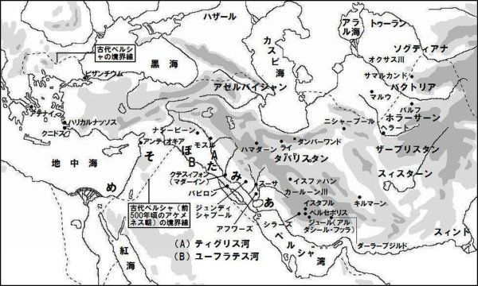

| タバリーによるシャーナーメ・上巻: 古代ペルシャ諸王の歴史ものがたり | |
| アブー・ジャアファルッ・タバリー | |
| (2014) | |

目次
訳者によるまえがき
シャーナーメとは
アーリア人の故郷
参考資料文献
シャーナーメ、ペルシャ諸王の歴史ものがたり
緒言
始めから終わり、最初から最後までの時間の長さの総計
ジャユーマートについてのペルシャ人の見解
ジャユーマートからオーシャハンジまで
オーシャハンジの支配
オーシャハンジ後のペルシャ王、タフムーラス
タフムーラスからジャムシード、アッダフハーク
ヌーホ（ノア）の時代の出来事
ベーワラースブ（ペイヴァルアスプ）、すなわちザッハークの物語
マヌーシフル（マヌーチェフル）
マヌーシフルの後、バビロンを支配したペルシャ人
カイ・コーバーズ後のペルシャ諸王
カイ・ホスロウ
ルフラースブ、ゴシュタースプ、ネブカドネザルの物語
ビシュタースブ（ゴシュタースプ）、ネブカドネザルの物語
アルダシール・バーマンと、彼の娘フマーニー
大ダリウスと息子のダリウス、そしてアレクサンドロスの物語
アレクサンドロス後のペルシャ人の物語
アシャカーン（アルサケス）王朝の諸王
訳者によるまえがき
シャーナーメとは
かつて、世界の中心は、文明の揺りかご、メソポタミアにあった。諸民族は、そこを「肥沃な三日月地帯」と讃美、羨望の眼差しを向けた。そこを制する者が、文明の覇者として世界に君臨したからだ。
そこから、人類史上初めて、西洋と東洋を股に掛け、世界を睥睨（へいげい）する一大帝国（アケメネス朝）を創設した民族が出現した。その君主は自らをシャーハンシャー、諸王の王と誇称した。人びとは彼らをアーリア人、すなわちイラン人、あるいはペルシャ人と呼んだ。
世界の歴史家は著述するとき、シャーハンシャーの物語、シャーナーメ（諸王の書）に焦点を合わせねばならなかった。昔から歴史は勝者が書く。「勝てば官軍、負ければ賊軍」、それはあたかも、現代の国際政治史が、唯一の超大国アメリカを歯車の中心として回転するがごとくである。
ギリシャ・ハリカルナッソスのヘロドトスは、超大国ペルシャがギリシャ諸都市の内政に干渉、ギリシャの政治家がシャーハンシャーに泣きを入れたり、虎の威を借りたりする事情を描写している。
アルタクセルクセス二世（在位紀元前四〇四―三五九年）の侍医として、宮廷に参内していたクニドスのクテスィアスは、今では散逸してしまった「ペルシャ諸王の書」を著した。
アルタクセルクセス二世と、弟のキュロスの間に勃発したペルシャ内戦（四〇一年）で、ギリシャ傭兵軍団の一員として、弟に与して参戦、敗北したアテナイのクセノフォンも、同様の書を書いている。
彼らの偉大な帝国（サーサーン朝）を滅ぼした（紀元六四二年）ムスリムの歴史家たちも、この伝統に従い、同様の著述手法をとった。ムスリム最高の歴史家として知られるアブー・ジャアファルッ・タバリー（紀元八三九―九二三年）は、大著「使徒たちと諸王の歴史」（تاريخ الرسل والملوك、ターリーフッ・ルスル・ワル・ムルーク、あるいはتاريخ الأمم والملوك＝人々と諸王の歴史、ターリーフル・ウマム・ワル・ムルーク）の中で、その意味を次のように解説している。
「世界の過去の歴史は、ほかのどの民族の王たちの生涯よりも、ペルシャの諸王の生涯を基軸に据えることによって、より容易にまたより明確に知ることができる。系譜をアーダムにまでさかのぼる諸民族のうち、王朝が継続し、支配が一貫して続いた民族は、彼らのほかには知られていないからである。
すべての民族と君主を支配し、彼らを敵から守護した諸王、彼らが敵対者に対して優位に立つのを支援した諸王、彼らの中で不正を働かれた者を、不正を働いた者から防衛する諸王、彼らのために絶え間なく継続し、初期の世代から後の世代まで、秩序正しく継承された幸運な状態を維持した諸王を持つ民族は、ほかに無い。したがって、ペルシャ諸王の生涯を基軸とする歴史は、最も健全な根拠と、最良で最も明確なデータを有するのである」。
しかし、ムスリムの学者たちは、書物としての「ペルシャ諸王の歴史」を参照したわけではない。アレクサンドロス大王の東征によって帝都ペルセポリスが陥落（前三三〇年）、王立公文書館は炎上、万巻の書物が塵芥に帰した。それから「諸王の歴史」は、ペルシャ帝国の欽定宗教・ゾロアスター教の聖職者によって、口頭伝承として残されただけだった。
これらの伝承を収集、編纂する事業を開始したのが、サーサーン朝の啓蒙君主、ホスロウ一世アヌーシルワーン（在位紀元五三一―五七九年）である。この作業はサーサーン朝最後の君主、ヤズドガルド三世（在位六三三―六四二年）が滅ぼされるまで続けられたが、何らかの理由によって散逸してしまった。
そして世界の中心をムスリムが制覇、イスラームの時代となった。歴史を著述する学者たちは、タバリーが語っているように、イスラーム以前に世界の中心を支配していた、ペルシャ帝国の歴史を研究することが不可欠となった。
その必要性を満たすために、ペルシャ人のイブヌル・ムカッファ（七五六年ころ没）は、ペルシャ諸王の伝承をアラビア語に翻訳した。イラク出身のヒシャーム・イブヌル・カルビー（七三七―八一九年）らは、イスラーム以前のアラブの歴史を知るために、アラブとペルシャの交流に関する伝承を収集した。中国の「魏志倭人伝」が、倭国に言及しているように、隣国の資料は自国の歴史を知る上で参考となるからだ。
そしてタバリーが、これらの膨大な伝承を集大成、天地創造から十世紀初頭までの世界史を著した。本書はタバリーの原典から、ペルシャの歴史に関する章節を抽出したものである。
さらに、詩人のハキーム・アブル・カースィム・フェルドゥースィー（九四〇―一〇二〇年ころ）が、これらの伝承、著作をもとに、一大叙事詩「シャーナーメ」（諸王の書）を完成、大衆に広く親しまれるようになった。その後、「シャーナーメ」の中のエピソードを種本とする英雄譚、恋愛物語、歌劇が創作されている。
しかし、フェルドゥースィー自身による原著は消失、現存しない。後代の写本にもさまざまな異同がある。そこで幾つかの完全に近い写本を照合して、原著を復元する作業が進められているという。その際、フェルドゥースィーのシャーナーメより、およそ百年早く書かれたタバリーのシャーナーメは、その作業の一助となるはずである。
アーリア人の故郷
アーリア人はもともと、イラン高原の住人ではなかった。おぼろげながらも、彼らは、紀元前二千年紀、中央アジア東部山岳地帯の某所で、半遊牧、半農耕的な暮らしを送っていたと考えられている。そこは豊かな自然、動植物に恵まれた、楽園のような邦だった。
ところが突然、彼らは離郷を余儀なくされる運命に見舞われた。その原因は気候の変動、寒冷化だったという。このため食糧生産が減少、人口が過剰となった。楽園が極寒の地に変化した。
さらに信仰の分裂、宗教紛争が社会不安を悪化させた。一方の集団は、のちにゾロアスター教の聖典として編纂されるアヴェスタの信奉者、もう一方の集団は、ヒンズー教の聖典となるリグ・ヴェーダの信奉者だった。
二つの集団は温暖な新天地を求めて南に向かった。途中で一つは右に折れてイラン高原に、もう一つは左に曲がってインド亜大陸に向かった。アヴェスタとリグ・ヴェーダの言語が酷似していることが、二つのグループが同郷人であったことを証明している。
ゾロアスターの教えによれば、天と地は神の英知によって創造された。そして地上を支配すべき最初の人間に、神は、神聖にして侵すべからざる王権を授け給うた。神授の王権は万世一系の王家に帰属し、何人たりともこれを犯すことは許されない。
王権が神聖にして不可侵であれば、君主は同様にして神聖、不可侵の義務を遵守しなければならない。それは社会の刷新、進歩により民の福利厚生を図り、正義すなわち法の支配によってあらゆる外敵、侵害者から民を守護、領土を防衛することである。西洋ではこれを社会契約と呼んだ。
強者、富者が、弱者、貧者のために献身することを、ノブレス・オブリージュ（高貴な義務）という。しかしこれは自発的な行為であり、義務違反に対する罰則はない。そこでしばしば、それは偽善や特権の正当化、乱用に逸脱してしまう。
神授の王権には、違反したとき厳しい懲罰が下される。君主が義務、すなわち契約に違反すれば、人民は君主を王家のほかの者に代える権利を有する。西洋の社会契約では、人民の抵抗権、革命権が最初から明確ではなかったが、古代ペルシャの王権神授思想では、これがはっきりと承認されていた。
シャーナーメでは、邦を救った英雄が王に推薦されても、自分は王家の出身ではない、と言って辞退したり、王家の断絶を恐れた廷臣が、王家の血筋の貴人を探し求めたり、僭主が厳しく弾劾される場面が語られ、このような王権神授思想が貫かれている。
（「アーリア人の故郷」は、http://heritageinstitute.com/zoroastrianism/index.htm を参考にした）。
参考資料文献
※http://www.cais-soas.com/
※http://www.sasanika.org/
※http://irantarikh.com/persia.htm
※http://www.livius.org/persia.html
※http://www.parthia.com/
※http://www.iranicaonline.org/
※http://classics.mit.edu/Ferdowsi/kings.html
※http://www.iranchamber.com/literature/shahnameh/shahnameh.php
※http://etcweb.princeton.edu/shahnama/start.epl
※Shahnameh, AbolQasem Ferdowsi, The Persian Book of Kings, Translated by Dick Davis, 2006, Viking.
※『王書』、フィルドゥスィ、黒柳恒男訳、平凡社・東洋文庫。
※『王書』、フェルドゥスィー、岡田恵美子訳、岩波文庫。
※『歴史』、ヘロドトス、松平千秋訳、岩波文庫。
※『プルターク英雄伝』、第一二巻・アルタクセルクセース、河野与一訳、岩波文庫。
※『アヴェスター』、伊藤義教訳、ちくま学芸文庫。
※『リグ・ヴェーダ讃歌』、辻直四郎訳、岩波文庫。
※『創世記』、関根正雄訳、岩波文庫。
※『旧約聖書大全』、ジョン・ドレイン、池田康文・池田耀子訳、講談社。
シャーナーメ、ペルシャ諸王の歴史ものがたり
緒言
慈悲あまねく、慈愛深きアッラーの御名において
アッラーに称賛あれ、森羅万象の始まりの前の始まり、あらゆる終わりの後の終わり、尽きることなく存在し、すべてを遍く掌握され、起源も何の範もなく、万物を創造される造物主。唯一無二の御方。なにものよりも後まで、無限に永遠に存在される御方。荘厳にして偉大、華麗にして力強く、権威と権力を有される御方。
その威力において並びたつ事象なく、その無類さにおいて対等の存在なく、何の助けも支援者も要せず、子もなく、配偶者もなく、「かれに比べ得る、何ものもない」（コーラン一一二章四節）。
主は、人間の想像を超絶し、天によっても地によっても包含できず、「視覚ではかれを捉えることはできない。だがかれはすべての視覚さえ捉えられる。またかれはすべてのことを熟知され、配慮されておられる」（六章一〇三節）。
我は、神のみを称讃した人びとのように、恵みを与え給うた神を称讃し、神の恩寵をさらに多く希求する者のように、神の恩寵に感謝する。そして神に近づき、神が満足し給うような、言葉と行動を果たせるように請い願う。
我は、アッラー以外に崇拝すべき存在はなく、アッラーは唯一であり、かれに並ぶ存在はないと証言する。そして我は、ムハンマドは神の気高い僕であり、誠実な使徒であると証言する。主は、御自分の啓示を伝えさせるために彼を選ばれ、御自分の被造物に、主への崇拝を招請するために彼を遣わされた。
彼は主の御命令を遵守して実行し、主の道のためにたゆまず奮闘、努力し、主のウンマ（共同体）に助言を与え、そして主に召されるまで、主を崇拝して、惜しむことなく不断の努力を捧げた。
神よ、最も卓越して、最も清真な御慈悲と平安を彼に与え給え。
さて、アッラー――至高であり、その御名は神聖である――は、創造する必要性もなく万物を創造され、建立する必要性もなく万物を建立され、さらに御自分の被造物の中から、御下命に従う能力を授ける存在をお選びになった。そして主は、彼らの主への崇拝を試され、主を崇拝する被造物には恩恵を授けられた。主から恩恵を授けられ、主を称讃するものに対して、主は更なる恩恵を与え給うた。まさしくそれは主の気高さと寛大さのゆえである。
主は、「ジンと人間を創ったのはわれに仕えさせるため。われは彼らにどんな糧も求めず、また扶養されることも求めない。本当にアッラーこそは、糧を授けられる御方、堅固なる偉力の主であられる」（五一章五六―五八節）、と言われる。
彼らを創造する以前と比べて、彼らの創造によって、主の威勢が砂粒一つほども変わることはなかった。また主が、彼らを絶滅させ、存在を無に帰されたとて、一本の髪の毛ほどの影響も主に与えることはなかった。なぜならば、何ものも主に影響を及ぼすことはなく、主は疲れを知らず、主は永久から一瞬に至るまでのすべての時間の創造主であられるため、昼も夜も主の威力を微動だにすることはできない。
主は、彼らに恩寵と報奨を授け給うた。主は彼らに耳、眼、それに心を与えられ、さらに特別に理性をお授けになることによって、彼らは、善悪の区別と損益の認識が可能になった。
主は、彼らのために大地を水平に開かれ、そこに往来が可能な道を彼らに与えられ、「天を堅固な屋根とし」（二一章三二節）、崇高な場所とした。そこから主は彼らに豊かな雨と、潤沢な糧を授けられた。
主は彼らの幸福のために、夜の月と昼の太陽を規則正しく交代させられる。主は彼らのために「夜を覆いとし、昼を生計の手段として定めた」（七八章一〇、一一節）。主は彼らに対する慈悲深いご配慮のゆえに、夜のしるしを消し、昼のしるしを眼に見えるようにして、夜の月と昼の太陽を交代させられるのである。
アッラー――至高であり、その御名は神聖である――は言われる、「われは夜と昼の二つの印を設け、夜の印を暗くした。だが昼の印は明るくして、あなた方に主の恩恵を祈らせ、また年数を知らせて暦法を計算させる。われはすべてのことを詳細に説き明かした」（一七章一二節）。
それは彼らに、礼拝、喜捨、巡礼、断食などの、神によって義務付けられた信仰の行為や、そのほかの義務と権利を遂行するときの時間――夜と昼の時間、月々と年数――の知識を習得させるためである。神は、「彼らは新月について、あなたに問うであろう。言ってやるがいい。『それは人びとのため、また巡礼のための時の定めである』」（二章一八九節）、と言われる。
主はさらに言われる、「かれこそは太陽を輝やかせ、月を灯明とされ、その軌道を定め、年数と時日の計算をあなた方に教えられた御方である。アッラーがこれらを創造されたのは、ただ真理を現わすためにほかならない。かれは知識ある人びとに印を詳しく述べられる。まことに夜と昼との交替、またアッラーが天と地の間に創られるすべてのものの中には、主を畏れる者への印がある」（一〇章五、六節）――これらはすべて、主が御自分の被造物に示された御厚意であり、彼らに対する主の恩寵と慈愛の現れである。
非常に多数の主の被造物は、主が彼らに授けられた恩寵に感謝した。そして主は、「その時、主はムーサの口を通して宣告された。『もしあなた方が感謝するならば、われは必ずあなた方に対する恩恵を増すであろう。だがもし恩恵を忘れるならば、わが懲罰は本当に厳しいものである』」（一四章七節）、と約束されたように、かつて、彼らの多くに授けられた寛大な恩恵にさらに加えて、報奨と贈り物を授けられた。
主は、現世における無上の幸福の達成と共に、至福の楽園で彼らが来たるべき来世を過ごす住み家を彼らにさらに授け給うた。主は彼らの多数のために、「隠されたことが露わにされる日」（八六章九節）に、さらに寛大な恩寵を彼らに授けようとされて、彼らに約束された報奨の増加を彼らが主に逢う日まで延期された。
しかし彼らの非常に多くは、主の恩恵を否定し、ほかのものを崇拝して、主の恩寵に感謝しなかった。そこで主は、以前彼らに施された寛大な恩恵を彼らの多くから奪われた。主はこの現世で彼らに破滅的な報いを与えられ、来世では彼らに屈辱的な懲罰を御用意された。主は彼らの多くに、生きている間は、主の恩恵を享受することを許された。それは来世において、御準備された重い懲罰によって裁かれる人間として似つかわしくするためである。
我らは、主のお怒りに触れるあらゆる行為に対する主の御加護を、そして主のご満悦と慈愛を得られるあらゆる行為に対する
成就を、主に請い願う。
アブー・ジャアファルは次のように伝えている。
かつて神に遣わされた啓示の伝達者たち、王権に就いた諸王たち、そして権勢を授けられた後継者たちが存在した。しかしここで、各人の時代背景や各時代の重要な出来事を詳細に取り扱うならば、本書は余りにも長文にわたってしまおう。それゆえ、ここでは（ペルシャ諸王の）時代の記述と主要な出来事の要約にとどめる。しかしながら私は、我々にとって論理的に最初に記述すべき事柄、現世の時間の長さの説明から記述を始めよう。
始めから終わり、最初から最後までの時間の長さの総計
我ら以前の初期の学者は、このことに関して見解が異なっていた。ある学者たちは、時間の長さの総計は七千年であると言った。
このように言った学者たち。
イブン・アッバースからサイード・イブン・ジュバイルに、サイードからハンマードに、ハンマードからヤフヤー・イブン・ヤアクーブに、ヤフヤーからヤフヤー・イブン・ワーディフに、ヤフヤーからイブン・ホマイドに伝えられたところによれば※、現世は来世の一週間――七千年――である。既に六千二百年が経過した。神の唯一性を信じる信仰者が存在しない、何百年かが必ず経過する。
※イスラームでは歴史伝承を記述するとき、その出典、典拠となっている学者の名前を列挙する決まった形式をとる。その伝承の系列をイスナードという。イブン・アッバースは、預言者ムハンマドの伯父アッバースの息子で、最初期のイスラーム学者。
ほかの学者は、時間の長さの総計は、六千年であると言った。
このように言った学者たち。
カアブがアブー・サーリフに伝え、アブー・サーリフがアルアマシュに伝え、アルアマシュがスフヤーンに伝え、スフヤーンがムアーウィヤ・イブン・ヒシャームに伝え、ムアーウィヤがアブー・ヒシャームに伝えたところによれば、現世は六千年である。
ワハブ・イブン・ムナッビヒ※がアブドゥル・サマド・イブン・マアキルに伝え、アブドゥル・サマドがイスマイール・イブン・アブドゥル・カリームに伝え、イスマイールがムハンマド・イブン・サフル・イブン・アスカルに伝えたところによれば、現世の五千六百年が既に経過した。「私（アブドゥル・サマド）は、この期間のそれぞれの時代に生きた王と預言者を知らない。私はワフブ・イブン・ムナッビヒに、現世の長さについて聞いた。彼は、六千年であると答えた」。
※ワハブ・イブン・ムナッビヒは、ペルシャ系のユダヤ教徒の息子として西暦七世紀の半ばにイエメンに生まれた伝承家で、ユダヤ教聖書とペルシャの伝承に精通していた。
ユダヤ教徒は、彼らが現在保有するトーラー（律法書、聖書）の中に明確に述べられていることに基づき、神によるアーダムの創造からヒジュラ（ムスリムのマッカからマディーナへの聖遷、西暦六二二年）までの時間の総計は、四千六百四十二年と確定される、と主張している。
彼らは、アーダムの時代から我らの預言者ムハンマドの聖遷までの各預言者の生年と没年を示して、詳細に計算した。私は情報を入手したとき、啓典の民（ユダヤ教徒とキリスト教徒）の学者たちと、伝記と歴史に詳しいそのほかの学者たちによる詳細な計算について言及したいものである、神が思し召しになれば。
ギリシャのキリスト教徒は、この点について、ユダヤ教徒の主張は間違いであると主張している。彼らが保有するトーラーの順列についての彼らの見解によれば、アーダムの創造から我らの預言者ムハンマドの聖遷までの、現世の時間の長さは、五千九百九十二年と数ヵ月と正確に記録されているという。
ペルシャのマギ（ゾロアスター）教徒は、ジャユーマート（カユーマルス）王から我らの預言者の聖遷までの期間を三千百三十九年と考える。彼らはジャユーマートを人類の祖、アーダム――神よ、彼とすべての預言者と神の使徒のために祈り、平安を与え給え――と考え、ジャユーマート以前の知られている系譜をこれに加えない。
歴史家は彼について違った見解を持ち続けている。ある者たちはマギ教徒と同じように考える。ほかの者たちは、彼は全世界の七つの邦の支配者となった後、アーダムを名乗り、彼こそが（創世記十章二節の）ゴメル・イブン・ヤぺテ・イブン・ノア（ヌーホ）だと考える。彼は敬虔、寛大で、ノアに優しく、献身的に奉仕した。
彼の敬虔さとノアへの献身のゆえに、ノアは、彼に長寿を与え、大地に堅固に定着し、彼と彼の子孫に敵対する者に対する勝利を授け、彼と子孫に絶えることのない王権を授けるよう、彼と彼の子孫のために神に祈った。彼の祈りは聞き届けられた。ジャユーマートと彼の子孫はすべてを授けられた。彼がペルシャ人の祖である。
彼と彼の子孫は、ムスリムがイラクのマダーイン・キスラー（クテスィフォン）に入り、彼らの王権を奪って、彼らの王権が停止するまでペルシャの支配を続けた。ほかの学者は、また違ったことを伝えている。我われは、ペルシャの支配者の年代、彼らの寿命、彼らの系譜と王権の状況について、我われに伝えられた見解を述べることにしよう。
ジャユーマートについてのペルシャ人の見解
ペルシャ人学者のほとんどは、ジャユーマート（カユーマルス）がアーダムであると考えている。ほかのある学者は、ジャユーマートはエバによるアーダムの腰の子供であると考える。またほかの学者は、ジャユーマートについてさまざまな見解を述べている。
この主題に関するペルシャ人学者の見解は、彼はアーダムではないと考えるほかの、非ペルシャ人学者たちによって反駁されている。これらの学者は、彼の名前についてはペルシャ人学者と一致しているが、その人物と特性については見解を異にしている。彼ら非ペルシャ人学者は、ペルシャ人学者がアーダムであると考えるジャユーマートは、ゴメル・イブン・ヤぺテ・イブン・ノアであると考える。
彼は東方のタバリスタン（カスピ海南岸、エルブルズ）山脈にあるダンバーワンド（デマーヴァンド）山に居を定めた長寿の君主で、そことファールス（イラン南部、ペルシャ）を支配した。彼の王権は拡大し、彼の子供たちにバービル（バビロン）を支配するように命じた。彼らはさまざまな期間にわたって、すべての地域を支配した。ジャユーマートは、彼が到達したすべての邦を防衛した。彼は自分のために街と城郭を建設し、そこに民を住まわせ繁栄させた。彼はまた武器を蓄え、騎兵隊を編制した。
彼の生涯の終わりのころ、彼は僭主となった。彼はアーダムと称し、「余をほかの名で呼ぶ者があれば、余はその者の手を切断する」、と言った。彼は三十人の女と結婚し、彼女たちは彼に多数の子孫を儲けた。彼の息子ミーシャー（マシー）と娘ミーシャーナ（マシュヤーナ）は、彼の生涯の終わりころに産まれた子供だった。彼が二人を寵愛して高位に就けたので、諸王は二人の子孫だった。彼の王国は大いに拡大した。
私はここで、諸民族の学者のうち、ジャユーマートが非アラブのペルシャ人の父祖であることを否定する人はいないというその理由によってのみ、ジャユーマートに関するこの情報に言及する。彼らは、我われが言及した人びと、あるいはほかの人たちが述べているように、彼が人類の父祖アーダムであるか否かという点についてのみ、彼についての見解を異にしている。
さらに、彼と彼の子孫の支配が、子孫の一人であるヤズドガルド（三世）・イブン・シャハリヤール（サーサーン朝ペルシャ最後の君主）――神よ、彼を罰し給え――が、ウスマーン・イブン・アッファーン（第三代正統カリフ）の時代、メルヴで殺されるまで（西暦六五一年）、東方とそこの山地で断絶することなく、秩序だって継続したからである。
世界の過去の歴史は、ほかのどの民族の王たちの生涯よりも、ペルシャの諸王の生涯を基軸に据えることによって、より容易にまたより明確に知ることができる。系譜をアーダムにまでさかのぼる諸民族のうち、王朝が継続し、支配が一貫して続いた民族は、彼らのほかには知られていないからである。
すべての民と族長を支配し、彼らを敵から守護した諸王、彼らが敵対者に対して優位に立つのを支援した諸王、彼らの中で不正を働かれた者を、不正を働いた者から防衛する諸王、彼らのために絶え間なく継続し、初期の世代から後の世代まで、秩序正しく継承された幸運な状態を維持した諸王を持つ民族はほかに無い。したがって、ペルシャ諸王の生涯を基軸とする歴史は、最も健全な根拠と、最良で最も明確なデータを有するのである。
インシャアッラー、神が思し召しになれば、そして神以外にはいかなる力も権威も存在しない、私は、アーダムはジャユーマートであると考えるペルシャ人の見解に反対する学者と、ジャユーマートはペルシャ人の父祖であるとする学者の双方に基づいて、王権を継承した彼の子孫の生涯に関する情報について記述しよう。私は、学者らが一定の時代に支配したと合意する人物が実際にその時代に支配したかについて、表明されている相異から確立されている一致まで、ペルシャ諸王の歴史について記述することにしよう。
ジャユーマートからオーシャハンジまで
ジャユーマート（カユーマルス）はアーダムであるとするペルシャの学者によれば、ジャユーマートには息子のミーシャーが生まれ、ミーシャーは妹のミーシャーナと結婚した。彼女は兄に息子のスィヤーマクと、娘のスィヤーミーを儲けた。スィヤーマク・イブン・ミーシャー・イブン・ジャユーマート※には、息子のアフラワーク、ディース、バラースフ、アジワブ、娘のアフリー、ダーズィー、バリー、アウラーシィーが生まれた。彼ら全員の母はスィヤーミー、彼らの父の妹だった。
※アラビア語で人名を表記するとき、イブン（息子）、ビント（娘）、アブー（父）、ウンム（母）によって表記する。この場合、ジャユーマートの息子ミーシャーの息子のスィヤーマク、とも訳すことができる。ファトゥマ・ビント・ムハンマドはムハンマドの娘ファトゥマ、アブー・サラマはサラマの父、ウンム・サラマはサラマの母の意。
ペルシャ人は、世界は七つの邦でできていると言っている。バービル（バビロン）と、人びとがそこに陸地から、あるいは海から到達できる地域が一つの邦を構成する。そこの住民は、アフラワーク・イブン・スィヤーマクの子供たちと彼らの子孫である。今日、陸からも海からも到達できないほかの六つの邦の住民は、スィヤーマクのほかの息子や娘たちの子孫である。
スィヤーマクの娘アフリーは、兄のアフラワークにホーシャンク（フーシャング、オーシャハンジ）・ペーシュダード王※を儲けた。支配者として父祖ジャユーマートを継いだのが彼で、彼は七つの邦すべてを支配した最初の君主だった。ある学者は、このオーシャハンジ（フーシャング）はアーダムの腰によるエバの子供と考えている。
※カユーマルスに始まるイラン最初の伝説の王朝をペーシュダード朝という。
ヒシャーム・イブヌル・カルビー※は、我われが彼を典拠として聞いているところによれば、（ヒシャームは次のように伝えている）。「我われは――神が最も御存知であるが――、世界を支配した最初の王は、オーシャハンジ・イブン・エベル・イブン・シェラ・イブン・アルパクシャド・イブン・セム・イブン・ノア※であると考えている」。彼（ヒシャーム）は続けた。「ペルシャ人は、彼はアーダムの死後、二百年生きたと主張している」。彼は続けた。「我われが聞いているところによれば、この王はノアの後、二百年生きたが、ファールスの人びとは、ノアの前のことには触れずに、彼はアーダムの後、二百年生きたとしている」。
※『キターブル・アスナーム』（偶像の書）の著者（西暦八二一―八二二年頃没）。イスラーム以前の歴史に詳しい学者。
※『創世記』（一〇章二一―二四節）を参照。
ペルシャの系譜の専門家の間では、ホーシャンク王は、ムスリムの間でアルハッジャージ・イブン・ユースフ※が有名である以上に有名であるので、ヒシャームの見解は考察するに値しない。いかなる民族も彼ら自身の父祖、系譜、業績について、ほかの民族よりも詳しく知っている。あらゆる複雑な問題については、何人も直接それらに関与している人びとを参考にしなければならない。
※預言者の妻アーイシャの甥アブドッラー・イブヌッ・ズバイルがウマイヤ朝に反旗を翻したイスラームの第二次内乱と言われる事件（西暦六八三―六九二年）で、アブドッラーを斃したダマスカス軍の武将で、マッカの聖域で神殿を破壊し、血を流した人物として知られている。
あるペルシャ人系譜学者は、このオーシャハンジ・ペーシュダード王がマハラルエル、彼の父アフラワークがマハラルエルの父ケナン、スィヤーマクがケナンの父エノシュ、ミーシャー（マシー）がエノシュの父シス、そしてジャユーマートがアーダムであると考える※。もしそうであるならば、オーシャハンジがアーダムの時代の人であることに疑問の余地は無い。なぜならば、第一の啓典（ユダヤ教の聖書）に記述されているように、マハラルエルの母ディーナ、つまりバラーキール・イブン・メフヤエル・イブン・エノク・イブン・カイン・イブン・アーダム※の娘は、アーダムの寿命が三百九十五年経過した後に、マハラルエルを産んだからである。そうであるならば、神の使徒を典拠とするアーダムの寿命に関する伝承によれば、アーダムは千年生きたので、アーダムが亡くなったとき、マハラルエルは六百五歳だった。
※『創世記』五章一―一二節を参照。
※『創世記』四章一七、一八節を参照。
ペルシャ人の学者は、このオーシャハンジの支配は四十年続いたと考えている。もし我われがここで言及したこの王に関する系譜学者の見解がその通りであるとすれば、彼がアーダムの死から二百年後に支配者となった、とすることは不可能ではない。
オーシャハンジの支配
私は既に、ペルシャの系譜学者がマハラルエル・イブン・ケナンについて言及したことを述べた。彼が七つの邦を支配したオーシャハンジ(フーシャング)である。私は彼らの見解に反対するアラブの系譜学者の見解についても説明した。
もしペルシャの系譜学者の言うがごとくであるなら、これに対して私は、ヒシャーム・イブン・ムハンマド・イブヌッ・サーイブ（イブヌル・カルビー）を典拠として、（オーシャハンジは）、樹木を伐採して建物を建造し、鉱物資源を採掘してその使用法を民に教えた最初の人間であると教えられている。彼は彼の時代の民に、マスジド（礼拝堂）を使用するように命じた。彼は地上で建設された最初の二つの街を建設した。それらはアルクーファの南部の地域のバービルと、アッスース（スーサ）の街である。彼は四十年支配した。
ほかの学者は、鉄が最初に鋳造されたのはオーシャハンジの時代である、と言っている。彼はそれを鍛冶の道具とした。彼は水の供給が不足していたので、（用水路によって）地域ごとに水を灌漑した。彼は民に土地を耕し、種を播き、収穫し、そのほかのすべての農作業に従事するように奨励した。彼は民に野獣を殺してその毛皮で衣服と敷物を作るように命じ、牛やそのほかの家畜、野生動物を屠ってその肉を食するように命じた。
彼は四十年支配した。彼はアッライ（現代のテヘラン近郊）の街を建設した。それはタバリスタンのダンバーワンドの、ジャユーマートの居住地だった街の後に建設された最初の街だった、と伝えられている。
ペルシャ人は、このオーシャハンジは王として生まれたと主張している。彼の生活様式、民を支配した手法は際立って称讃に値した。それが彼が、ペルシャ語で「正義によって裁いた最初の人」を意味する、別名フェーシュダーズ（ペーシュダード）で呼ばれたゆえんで、ファーシュは「第一」、ダーズは「正義と審判」（最初の法治者）を意味する。
彼らはまた、彼はインドに行き、広大な範囲を行動したと伝えている。彼が政情を刷新して彼の統治が堅固に樹立されると、彼は頭に王冠を戴き、彼は王国を父祖のジャユーマートから継承し、反逆的な人間と悪魔（アフリーマン）を懲罰し復讐すると演説した。
また彼らは、彼はイブリース（悪魔）とその軍隊を征服し、人間と交わることを悪魔に禁止したと主張している。彼は白書に文書を書き記し、いかなる人間にも敵対することを禁じた契約を悪魔に強制した。悪魔がそのようなことをした場合、彼は悪魔を威嚇した。彼は反逆した悪魔と多数の怨霊を殺した。彼を恐れた悪魔たちは砂漠、山、辺境の峡谷に逃亡した。
オーシャハンジはすべての邦を統治した。ジャユーマートの死から、オーシャハンジの誕生と支配までに二百三十六年が経過した。ペルシャ人はまた、イブリースと彼の軍隊はオーシャハンジの死に歓喜したと主張している。オーシャハンジの死により悪魔は、アーダムの子供たちの居住地に入り、山や谷から彼らのところに出て行くことができたからである。
オーシャハンジ後のペルシャ王、タフムーラス
ある人は、ベーワラースブ（ザッハーク）は（預言者の）イドリース（イエレドの子エノク）の時代に支配していた、と伝えている。アーダムの言葉の一部がたまたま彼に届き、彼はそれを魔術を操るために使った。ベーワラースブは魔術師だった。彼は自分の王国のどこかから何かを欲しがったり、乗り物の動物や女を求めるとき、黄金のあし笛を吹き、すると何でも彼の思いのままになった。これがユダヤ教徒が、（ショーファール、角笛を）吹くようになった起源である。
ペイヴァルアスプ（ベーワラースブ）はパハラビー語で「一万」を意味し、アッダフハーク（ザッハーク）が一万頭の高貴なアラビア馬を所有し、夜も昼も馬上で過ごしていたのでこう呼ばれた。
ペルシャ人は、オーシャハンジの後、タフムーラス・イブン・ウェーワンジハーン・イブン・フーバーンダーズ・イブン・フヤーイダール・イブン・オーシャハンジが支配者となったと言っている。タフムーラスからオーシャハンジにさかのぼる系譜については、見解が相異している。ある人は、私が記した系譜を支持する。しかしほかのペルシャ人系譜学者は、タフムーラス・イブン・エーワンキハーン・イブン・アンハド・イブン・アスハド・イブン・オーシャハンジとする。
ヒシャーム・イブン・ムハンマドル・カルビーを典拠として私に伝えられているところによれば、ヒシャームは、学者たちはバービルの最初の支配者がタフムーラスだったと伝えている、と述べている。彼は続けた。神が彼に強大な権力を与えたので、イブリースと悪魔たちは彼に服従した、と我われは聞いている――神が最も御存知であられる。彼は神に忠実だった。彼は四十年支配した。
これに対してペルシャ人は、タフムーラスはすべての邦を支配した、と考える。彼は支配者となった日、王冠を頭に戴き、「神の助けにより、我らは神の被造物の中から腐敗した反逆者を排除する」、と演説した。彼の統治は称讃に値し、彼は臣民に対して寛容だった。彼はファールスにサーブールを建設し、そこに住んだ。彼は各地で行動した。彼はイブリースに跨り、それに乗って世界中のあちこちを周遊した。彼はイブリースと反逆的な彼の仲間を制圧し、彼らを散り散りばらばらとした。
彼は衣服と敷物のために羊毛と動物の毛を使った最初の人であり、また馬、ラバ、ロバを乗用とし、王権の示威とした最初の人だった。彼は家畜を野獣から守り保護するために番犬を、狩りのために猛禽を使うよう人びとに命じた。彼はパハラビー語で書いた。ベーワラースブ（ペイヴァルアスプ）は彼の統治の最初の年に現れ、サービア教徒（原始一神教の一派）の領域のために宣伝を始めた。
タフムーラスからジャムシード、アッダフハーク
これに対してペルシャの学者は次のように言う。タフムーラスの後、ジャムッ・シード（ジャムシード）が支配者となった。彼らの見解によれば、アッシードは光線を意味する。彼はその美しさからそう呼ばれたと考えられる。彼はジャム・イブン・ウェーワンジハーンで、タフムーラスの弟だった。彼は七つの邦のすべてを支配したと言われている。
彼はジン（精霊）と人間を服従させた。彼は頭に王冠を戴いた。彼は王国に堅固な地位を確立すると、「神は我らに全き栄光と絶大な支援を授けられた。我らは民に多大な善をもたらそう」、と演説した。彼は武器の製造を始めた。彼はまた錦糸、絹糸そのほかの繊維の製糸方を教えた。彼は衣服を縫製して染色するように命じ、また騎乗を制御しやすくするために馬具に鞍頭を備えた。
ほかの学者が言うには、彼は彼の治世が六百十六年と六カ月経過した時、姿を隠し、王国には一年の間、彼が存在しなかった。彼の治世の第一年から五年目まで、彼は刀、鎖かたびら、剣、そのほかの武具と、職人のための鉄の道具を生産するように命じた。治世の五十年目から百年まで、彼は錦糸、絹糸、綿糸、亜麻糸、そのほかあらゆる繊維の紡織、布地のさまざま色への染色、さまざまな模様への裁縫、着服を命じた。
治世の百年目から百五十年まで、彼は民を武人、神官、官僚、平民（職人と農民）の四つの階層に分け、一つの階層を彼の僕として彼自身に仕えさせた。彼はそれぞれの階層に、彼が義務とした仕事を実行するように命じた。
百五十年から二百五十年まで、彼は悪魔とジンと戦い、彼らを殺戮し侮辱した。彼らは彼に隷従し、彼の命令に服従しなければならなかった。二百五十年から三百十六年まで、彼は悪魔に山からの削岩、砕石の労働を課し、大理石、石膏、石灰を生産させた。
また彼らは、それらの材料と粘土で建造物や浴場を建設するために使役された。また彼は彼らに（皮革製造用の）除毛剤を生産させ、金、銀、そのほかすべての溶解可能な貴金属、そしてさまざまな香水、薬剤といった人類にとって有益なあらゆる物資を海から、山から、砂漠から輸送するために彼らを使役した。
彼らは彼のそれらすべての命令に従った。それからジャムシードは、ガラスの戦車の製造を命じた。彼は悪魔をそれに繋ぎ、それに騎乗して空を飛び、彼のいたダンバーワンドから一日でバービルに着いた。その日は、ファワルディーン・マー（ファルヴァルディーン、イラン暦正月）のフルムズローズ（ノウルーズ、元旦）であった。人びとが見たその時に彼が行った奇蹟のゆえに、人びとはその日をノウルーズと定めたのである。
彼はその日と、続く五日間を祝祭と定め、喜び楽しむように命じた。その第六日、フルダーズルーズ日、彼は民に書簡を送り、彼は民の間にあって神が喜ぶ生活様式を送ったと知らせた。それに対する神の彼への報奨の一部は、神が民から暑さと寒さ、病気、老衰、嫉妬をとり除かれたことだった。彼の治世の三百十六年が過ぎてからの続く三百年の間、民は神が彼らからとり除かれた不幸に侵されることはなかった。
このためジャムシードは、神が彼に示された恩寵に対し傲慢となった。彼はジンと人間を集め、彼らを完全に支配しているのは彼であり、彼が彼の力によって病気、老衰、死から彼らを守っていると教えた。彼は神による彼への恩恵を否定し、悪行に固執したので、王宮で彼に応える者は一人としていなくなった。
たちまちにして彼は栄光と権力を失い、神が彼を支えるように命じた天使たちは彼から離れて行った。アッダフハ―ク（ザッハーク）と呼ばれていたベーワラースブがこれを知った。ベーワラースブは彼を倒そうと急襲したが、ジャムシードは逃走した。ベーワラースブは後に彼を捕らえた。ベーワラースブは彼の内臓を引き裂き、それを飲み込み、彼を鋸で二つにした。
あるペルシャ人学者は、ジャムシードは彼の治世の最後の百年まで、称讃に値する生活様式を送ったと語っている。その後彼は精神的に混乱し、神性を請求するようになった。その結果、彼と彼の王権は混乱した。彼の弟イスフィトゥールは彼に反抗して、彼を殺そうとして追及した。ジャムシードは弟から逃れた。その隠れていた期間、ジャムシードは流浪の支配者だった。そしてベーワラースブが彼の王国を奪い取り、彼を鋸で二つにした。
ある学者は、ジャムシードは七百十六年と、四ヶ月、二十日、支配したと考えている。
ワハブ・イブン・ムナッビヒを典拠として、ジャムシード王と似た物語が、過去の王たちの一人について伝えられている。もしその王の年代がジャムシードの年代と離れていないのであれば、それはジャムシードの物語であろうと私は考える。それはワハブ・イブン・ムナッビヒからアブドゥル・サマド・イブン・マアキルに、アブドゥル・サマドからイスマイール・イブン・アブドゥル・カリームに、イスマイールからムハンマド・イブン・サフル・イブン・アスカルに、ムハンマドから私に伝えられている物語である。
ある男が若くして支配者となった。彼は、「私は支配を愛好しており、それが楽しい。私はすべての男がそのようであるのか、あるいは私がこの点で彼らの中の例外であるのか分からない」、と言った。支配とはそのようなものであると言われると彼は、「何が私を長く支配させるか」、と尋ねた。彼は、「神に反抗するのではなく、神に服従することである」、と教えられた。
すると彼は、彼の王国の中から最高の人物を何人か招集し、彼らに「宮廷で余に仕えよ、そしてそなたたちが神への服従と考える行いは何でも余にそれを行うように命じ、神に服従しないと考える行いは何でもそれを避けるように余に警告せよ、そうすれば余はそれを避ける」、と命じた。この結果、彼の王国は四百年の間、健全な状態を保ち、その間彼は神に服従した。
イブリースが風の便りでそれを聞きつけた。イブリースは、「神を崇拝する支配者を四百年間支配者としたのは、このわしだ」、と言った。彼は人間に化けて支配者の面前に現れたが、支配者は彼を恐れ誰かと聞いた。イブリースは、「恐れる理由は何もありません。あなたが誰か教えて頂けませんか」、と聞いた。支配者は、「余はアーダムの子供の一人である」、と答えた。
彼は支配者に、「もしもあなたがアーダムの子供の一人であったなら、あなたは彼らのように死んでしまったでしょう。どんなに多数の人間が亡くなり、どんなに多数の世代が去ってしまったことでしょう。もしもあなたが彼らの一人であったなら、彼らのように死んでしまったでしょう。いいえ、あなたは神なのです。ですから民を招集してあなたを崇拝させなさい」、と言った。
この考えは、支配者の心を打った。そこで彼は説教壇に上り民に向かって、「余はこれまであることを隠して来た。今やそれをそなたたちに、明らかにしなければならないことが明白となった。そなたたちは、余が四百年そなたたちを支配してきたことを知っていよう。それで、もし余がアーダムの子供の一人であったなら、彼らのように余は死んだであろう。しかし、余は神である。ゆえに余を崇拝せよ」、と演説した。するとたちまち彼は、痙攣に襲われた。
神は支配者と共にいた一人に次のように啓示した。「われは彼がわれに公正である限り、彼に対して公正であった、と彼に教えなさい。しかし今や、彼がわれに対する服従から不服従に変心し、われに公正ではなくなったので、われはわれの権威にかけて、ブフト・ナースル（ネブカドネザル）に彼を征服する権力を授ける、と宣誓する。ブフト・ナースルは彼の首を落とし、彼の宝庫の中のすべてを奪うであろう」。
そのころ、神がある者に怒ると、神はブフト・ナースルに彼を征服する力を授けるのだった。支配者が、言い続けてきたことを言うのをやめなかったので、ついに神はブフト・ナースルに彼を征服する力を授けられた。ブフト・ナースルは彼の首を落とし、彼の宝庫から黄金を七十隻の船に満載した。
アブー・ジャアファルは次のように伝えている。しかしながら、ブフト・ナースルとジャムシードの間には、大きな時間の隔たりがある。ただし、アッダフハークがそのころブフト・ナースルと呼ばれていたのかも知れない。
ヒシャーム・イブヌル・カルビーを典拠として私に伝えられているところによれば、彼は次のように語った。ジャムシードはタフムーラスの後に支配者となった。彼は彼の同時代人の中で、最も眉目秀麗で最も大きな体格をしていた。彼は続けた。ジャムシードは六百十九年の間、神に忠実に過ごし、彼の治世は繁栄し邦の統治は安定していた。それから彼は、不正な僭主となった。そこで神は、アッダフハークに彼を征服する力を授けられた。
アッダフハークは二十万人の軍勢と共に彼に向かって進撃し、ジャムシードは百年の間、逃亡し続けた。アッダフハークはついに彼を捕らえ、鋸で彼を二つに分けた。彼は続けた。支配者となってから死ぬまでのジャムシードの支配は、七百十九年だった。
初期の多くの学者を典拠として伝えられているところによれば、アーダムとヌーホ（ノア）の間に十世代が経過し、彼らはすべて唯一真正な宗教の信奉者だった。不信仰はヌーホが派遣された世代に初めて始まった。伝えられているところによればヌーホは、民に警告して神の唯一性を承認するように呼びかけるために、使徒として神から民に遣わされた最初の預言者だった。
そのように言った学者たち。
イブン・アッバースからイクリマに、イクリマからカターダに、カターダからハンマームに、ハンマームからアブー・ダーウードに、アブー・ダーウードからムハンマド・イブン・バシュシャールに伝えられたところによれば、ヌーホとアーダムの間に十世代が経過し、彼らはすべて唯一真正な宗教法の信奉者だった。その後、彼らに不一致が起こり、「そして神は、福音の伝達者、警告者として預言者を遣わされた」（二章二一三節）。彼は続けた。アブドッラー（・イブン・マスウード※）の読誦によれば、「人類は一つの民族であった。それから彼らに不一致が起きた」。
※最初期のムスリム、ムスリム初のコーラン読誦者として知られている。
カターダからマアマルに、マアマルからアブドッ・ラッザ―クに、彼からアルハサン・イブン・ヤフヤーに伝えられたところによれば、（カターダは）、神の御言葉「人類は一つの民族であった」を解説して、彼らはすべて正しく導かれていた、と語った。それから彼らに不一致が起き、「そして神は、福音の伝達者、警告者として預言者を遣わされた」。最初に遣わされた預言者はヌーホだった。
ヌーホの時代の出来事
ある学者は、ヌーホの民は神が禁じられたことを是とし、悪徳、飲酒に耽り、音楽に没頭して、神への服従から離反した、と述べている。ほかの学者は、彼らはサービア教の意見を最初に宣伝したベーワラースブに忠実な民だったとしている。これに関して彼に追従した民が、ヌーホが遣わされた民だった。
マギ教徒は大洪水の知識を持っていない。彼らは、「我らの支配は――彼らがアーダムと同一の人物とする――ジャユーマートの時代から断絶することなく継続している」、と主張する。（ペルシャの）支配は、（ヤズドガルド三世の息子）フェーローズ・イブン・ヤズドガルド・イブン・シャハリヤールの時代まで連続して継承された。
彼らはまた、（大洪水の物語が）「もし健全であるならば、彼らの民族の血統は断絶してしまい、彼らの支配が崩壊してしまったであろう」、と主張する。彼らの一部は大洪水を肯定し、バービル（バビロン）の邦とその周辺で起き、ジャユーマートの子孫はその東に居住していたので、大洪水は彼らのところに到達しなかったと考えている。
アブー・ジャアファルは次のように伝えている。大洪水に関して神によって授けられている情報は、彼らの見解と矛盾しており、神の啓示が真実である、「ヌーホはわれらに助けを求めた、そしてそれに応えたことは何と素晴らしいことか。われらはヌーホと彼の家族を大破局から救い、そしてわれらは彼の子孫を生存者とした」（三七章七五―七七節）。神はこうしてヌーホの子孫が生存者であることを教え、（生存者は）ほかの誰でもない。
私は既に、人びとの間での、ジャユーマートに関する見解の相異について言及した。何人かは彼の人物についてペルシャ人と見解を異にしている。
ベーワラースブ（ペイヴァルアスプ）、すなわちザッハークの物語
アラブは彼をアッダフハークと呼んでいる。彼らはペルシャ語の文字ＳとＺの中間の音をＤと発音し、Ｈ、ＫＨ、Ｑの文字をＫと発音するからである。
彼は、（詩人）ハビーブ・イブン・アウスが、「彼はフィルアウン※、あるいはハーマーン※、あるいはカールーン※が、現世で達成したことすら達成しなかった。むしろ彼は、現世の権力の強大さにおいては、アッダフハークのようであり、そしてあなたはアファリードゥーン（フェリドゥーン）である」、と語ったときに、念頭に置いていた人である。彼は（イエメン出身の）アルハサン・イブン・ハーニイが、アッダフハークは自分の民の出身であると自慢した人である。
「我らの一人はアッダフハークであった、
狂人とジンが彼らの川床で崇拝した」。
※古代エジプト王国の王ファラオ。
※『エステル書』三章でユダヤ教徒に敵対する、ペルシャ王クセルクセスの宰相。コーラン二八章六節、四〇章二四節ほかでは、ファラオの宰相として登場する。
※『民数記』一六章でモーセに反逆するコラ。コーランではファラオの宰相。
イエメン人は彼を、彼らの一人であると主張している。このアッダフハークについて、ヒシャーム・イブン・ムハンマド・イブヌッ・サーイブを典拠とする次の報告が、私に伝えられている。ペルシャ人は、ジャムシードが彼の妹の一人を彼の一族の貴人に嫁がせてイエメンの支配者とし、そして彼女がアッダフハークを産んだ、と主張して、アッダフハークはペルシャ人であるとする。
しかしイエメン人は、彼は彼らの一人であると主張している。彼らは、彼はアッダフハーク・イブン・アルワーン・イブン・ウバイド・イブン・ウワイジで、彼は弟のスィナーン・イブン・アルワーン・イブン・ウバイド・イブン・ウワイジをエジプトの支配者に任命した、と主張している。スィナーンは最初のファラオで、慈悲深い神の友イブラヒームがエジプトに行ったとき、そこの支配者だった。
一方、ほかのペルシャ人はこのザッハークの系譜を、ヒシャームが伝えた系譜とは異なるイエメン人の系譜に帰属させている。彼らは、彼はベーワラースブ・イブン・アルワンダスブ・イブン・ズィーンカーウ・イブン・ウィーラウシャク・イブン・ターズ・イブン・アフラワーク・イブン・スィヤーマク・イブン・ミーシャー・イブン・ジャユーマートであると言う。
この系譜を彼に帰属させるほかの学者もいるが、彼の父祖たちの名を異なって発音する。彼らは彼を、アッダフハーク・イブン・アンドゥラマスブ・イブン・ランハダール・イブン・ワンダリサフ・イブン・タージ・イブン・ファルヤーク・イブン・サーヒマク・イブン・マーディー・イブン・ジャユーマートとする。マギ教徒はこのタージがアラブの祖先で、またアッダフハークの母はワダク・ビント・ウィーワンジャハーンであると言う。また彼らは、彼は悪魔にへつらうために自分の父を殺したと言う。
彼はしばしばバービル（バビロン）に居住し、一人はサルナフィワール、もう一人はナファワールという名の、二人の息子を儲けた。
アッシャアビーは、彼は神がザッハークに変身させたカリシャトだった、と言っていた。アッシャアビーからアルカースィム・イブン・サルマーンに、アルカースィムからヤフヤー・イブヌル・アラーアに、ヤフヤーからサラマ・イブヌル・ファドゥルに、サラマからイブン・ホマイドに伝えられたところによれば、アブジャド、ハッウィズ、フッティ、カリマン、サアファス、カリシャトという僭主たちがいた。
ある日、カリシャトは、もの思いに耽り、「神に称讃あれ、至高の造物主よ」、と唱え、そこで神は彼をザッハークに変身させた。彼は七つの頭を持ち、ダンバーワンド山に住んだ君主の一人だった。アラブもペルシャ人も、すべての歴史家は、彼はすべての邦を支配した邪悪な魔法使いだったと主張している。
ヒシャーム・イブン・ムハンマドによれば、アッダフハークはジャムシードの後、千年の間支配したと伝えられている――しかし神はもっとご存知であられる。彼はクーファ街道の近く、ナルスの街のサワードに住み、暴政と圧制を敷いて全土を支配した。彼は殺戮を行い、磔刑と手足切断を制定した最初の人だった。
彼はまた最初に十分の一税を課し、ディルハム銀貨を鋳造し、最初に歌い歌われた人だった。彼の両肩から瘤が生えており、彼は痛みに苦しんだと言われている。痛みに耐えられなくなると彼は、人間の脳みそをそれに塗るのだった。このために彼は毎日、二人の人間を殺し、脳みそを瘤に塗った。彼がそうすると、痛みは和らいだ。
バビロンの民衆の一人がアッダフハークに反旗を翻し、多数の人びとが彼の下に団結した。アッダフハークはこれを知って警戒し、その男に、「どうしたというのだ、何が望みなのだ」、と呼びかけた。男は、「お前は世界の支配者であり、世界はお前の物であると主張しているのではないか」、と言った。アッダフハークは、「いかにもその通り」、と答えた。
すると反乱者は、「そうであるならば、お前は自分の欲望を全世界に向け、我らだけに向けるな、お前はすべての民の中で我らだけを殺しているではないか」、と言った。アッダフハークはこの件で彼に同意し、毎日殺す二人の人間をすべての民の間で分担させるように命じ、別々の地域ではなく一か所だけから選ぶことを禁じた。
我われは、イスファハンの民は反旗を翻したその男の子孫で、この旗はいまだにファールスの王たちによって彼らの宝物庫に保存されていると教えられている。我われに伝えられているところによれば、それはライオンの皮で、ファールスの王たちはそれを黄金と錦糸で飾り、吉兆をもたらすお宝としている。
ヒシャームは続けた。我われは、アッダフハークがニムロド※で、慈悲深い神の友イブラヒームは彼の治世に生まれ、またアッダフハークがイブラヒームの主人でイブラヒームを焼き殺そうとした、と教えられている。
※『創世記』一〇章八節ほかに登場する世界初の権力者。『コーラン』二章二五八節では、イブラヒームと論争した人物。
我われに伝えられているところによれば、アッダフハークの前の王ジャムシードの家系のアファリードゥーン（フェリドゥーン）――ある者は、彼はジャムシードの第九子で、ダンバーワンドで生まれたと主張する――は、アッダフハークがインドに出かけているとき出撃し、アッダフハークの館に入ったと伝えられている。
アファリードゥーンは館と、その中の物すべてを奪った。この知らせがアッダフハークに届き、彼は戻ってきた。しかし神は王権を彼から奪い給い、彼の支配は終わった。アファリードゥーンは彼を攻撃してきつく縛りあげ、ダンバーワンドに引いて行った。ペルシャ人は、彼はいまだにそこにいて鉄の鎖でつながれ、懲罰を受けていると主張している。
ヒシャーム以外のほかの学者は、アッダフハークは住居を留守にしていたのではなく、アファリードゥーン・イブン・アスィフィヤーン（アーブティーン）が、マー・ミフル（第七）月のルーズ・ミフル（第十六）日に、ザランジと呼ばれる砦の中の彼の住居を訪れ、一人はアルワナーズ（シャフルナーズ）、もう一人はサンワール※（アルナワーズ）と呼ばれる彼の女の中の二人と結ばれた。
※アッダフハークに略奪されたジャムシードの二人の王女。
これを知ったベーワラースブは驚愕のあまり言葉を失い、理性を失った。アファリードゥーンが彼の頭を槌矛――先端を縁取りした物を持っていた――で打つと、ベーワラースブはさらに恐怖し錯乱した。そこでアファリードゥーンは彼を引いてダンバーワンド山に行き、彼を堅固に縛りつけた。アファリードゥーンは、ベーワラースブが囚人となったマー・ミフル月のルーズ・ミフル日を祭日とするよう民衆に命じた――それは今日、アルミフルジャーン祭と呼ばれている。そしてアファリードゥーンは王座に就いた。
アッダフハークが君主として王冠を頭に戴いていたとき、彼は、「我らはこの世界の支配者であり、その中のすべての所有者である」、と言っていたと伝えられている。ペルシャ人は、統治権はオーシャハンジ、ジャムシード、タフムーラスが出た王家の血統にのみ所属し、アッダフハークは魔法と策略によってペルシャの民を奪い取った反逆者であり、両肩に生やしていた二匹の大蛇によって民を恐怖の底に陥れたと主張している。
彼らはまた、アッダフハークはバビロンの地に街を建設してハウブと名付け、（古くイエメンからアラビア半島北部に移住した）ナバタイ人を彼の従者、廷臣としたと言っている。民衆は彼によるあらゆる種類の強制に隷従し、彼は幼い子供を殺害した。
書物に詳しい多数の人たちは、彼の両肩に生えていた物は二本の長い腫れあがった肉塊で、それぞれは大蛇の頭のようで、彼の邪悪さと狡猾さから彼はそれらを衣服で隠していたと伝えている。彼は人を恐怖させるため、あたかもそれらを、飢えたとき彼に餌を要求して彼の衣服の下で、ちょうど人間が飢えや怒りで興奮したとき臓器が動くように、うごめく二匹の蛇のように見せかけた。
しかし、それらは本当に二匹の蛇だったと言う人もいる。私はそれに関して、アッシャビーを典拠として伝えられていることに言及したが、その真実さと正確さについては、神がより良くご存知であられる。
ペルシャ人の系譜と彼らの事情に詳しい権威者によれば、民衆はこのベーワラースブに残酷に苦しめられ、神はついに彼の滅亡を決断された。その時、カービー（カーヴェ）という名のイスファハンの民衆の一人が彼に反乱した。カービーは、二人の息子がベーワラースブの使者によって、彼の肩の蛇のために捕らえられたので、反乱を起こしたのである。
息子のために悲嘆に打ちひしがれたカービーは、持っていたさおをとり上げて、先端に革袋を掲げたと言われている。カービーはこれを旗印とし、民衆がこの大きな悲しみを分かち合い、同じように苦しめられていたので、ベーワラースブに反抗して彼と共に戦うよう民衆に呼びかけた。
カービーが勝利すると、民衆はこの旗印を吉兆の象徴と見なすようになった。民衆はさらに一層の名誉をそれに授け、ついにそれはペルシャの諸王の最も偉大な軍旗となった。彼らはそれによって幸運を追求し、それをディラフシ・カービヤーン（カービーの御旗）と名付けた。彼らはそれを最も重大な遠征のための進軍の際にだけ持ち出し、また重大な任務に派遣された王子たちのためだけに掲げた。
カービーの物語によって我われは、彼が最初の同胞と途中で彼に合流した民衆と共にイスファハンを発った、と教えられている。彼がアッダフハークに接近して、その陣営を見おろすと、アッダフハークは恐怖に陥って野営地から逃走し、陣営をペルシャ人に明け渡したので、彼らは思いのままの物を戦利品とすることができた。
彼らはカービーを取り巻き説得した。カービーは彼らに、自分は王族の血筋ではないので王にはなりたくないと語った。彼は、王制を採用した最初の人物であり、王制を敷いたほかのすべての者に先行するオーシャハンジ（フーシャング）・イブン・アフラワーク（ファルワーク）の息子がジャムシードであるから、ジャムシードの息子の一人を王とするように彼らに命じた。
アッダフハークから隠れてどこかほかの地域にいたアファリードゥーン・イブン・アスィフィヤーンが、カービーと彼と共にいた人びとの前に現れた。彼らの伝承によれば、アファリードゥーンが支配者の血統だったので、彼らはその到着を吉兆と受け取った。そこで彼らはアファリードゥーンを王とし、カービーと貴人は政治において彼の補佐役となった。
アファリードゥーンは王権を掌握し、彼の支配を強化するために必要なことすべてを実行した。アッダフハークの住居も占拠すると、彼はアッダフハークを追跡して、ダンバーワンド山で囚人とした。あるマギ教徒は、彼はアッダフハークを捕虜としその山の牢獄につなぎ、ジンの集団を見張り番としたと主張し、またほかの者は、彼はアッダフハークを殺したと言っている。
彼らは、善い事と考えられるただ一つのことがアッダフハークについて語られている、と主張している。彼の痛みが激しくなって虐政が長期化し、彼の支配が長引くと、彼の支配下であまりに民衆が苦しんでいると考えた貴人たちは、この情勢について議論し、アッダフハークの門を訪ねることで合意した。
さまざまな地域、地方からの貴人、有力者が彼の門に到着すると、彼らは彼に面会して苦情を述べ、彼と妥協することに関して議論をたたかわせた。彼らはカービー・イスファハーニが彼らを代表して話すことで合意した。
彼らがアッダフハークの門に向かって旅していると、アッダフハークは彼らがやって来ることを知らされ、彼らに入城を許し、彼らはカービーを先頭にして入って行った。カービーはアッダフハークの面前に出たが、挨拶しなかった。カービーは、「おお、王よ、人はあなたにどの挨拶をするのでしょうか。これらの邦すべてを支配する人のための挨拶でしょうか、それともこの邦――バビロンを意味し――だけを支配する人のための挨拶でしょうか」、と尋ねた。
アッダフハークは、「否、これらの邦すべてを支配する人のための挨拶である、なぜなら余は世界の王であるからだ」、と答えた。するとイスファハーニは、「もしあなたがすべての邦を支配し、あなたの権力がそのすべてに及ぶのならば、それならばなぜ、あなたのすべての邦の民の中から、ただ我らだけがあなたの重荷、あなたの非寛容、そしてあなたの悪行の犠牲にされなければならないのでしょうか。それならばなぜあなたは、あれやこれやの問題を我らとほかの地域の間で分担させようとなさらないのでしょうか」、と抗議した。
イスファハーニは真実を勇敢に語り、問題を指摘して、アッダフハークが彼らの負担を軽減することができる方法を数え上げた。彼の言葉はアッダフハークの心を動かし、彼はこのようにしてアッダフハークが過ちを認めるまで王を説得し続けた。王は親しく民衆に語りかけ、彼らが望むことを実行すると約束した。そして王は、彼らが野営地に戻って落ち着くように、彼らに離れるように命じた。彼らは彼らの街に帰る前に、必要であれば、王のところに戻ることにしていた。
ペルシャ人は、アッダフハークの母ワダクは彼よりも悪人でさらに邪悪、民衆が彼に抗議していたときそばにいて、彼らが彼に語ることを聞いていたと主張している。民衆が立ち去ると、彼女は怒りに燃えて入って来た。彼女はアッダフハークが民衆に示した忍耐を許さず、「私は起きた事のすべてを聞き、この民衆のあなたに対する厚かましさ、彼らがあの手この手であなたを脅し、あれやこれやと非難するのを見ました。あなたは怒りを彼らに向けるか、彼らの手を切断して彼らを懲罰しないのですか」、と彼に言った。
彼の傲慢さにもかかわらず、これがアッダフハークにとって耐えられなくなると彼は、「おお、母よ、あなたは私がこれまでに考え付かなかったことを少しでも考えたことはありませんが、民衆は真実によって私を驚かし、それによって私を恐れさせたのです。私が彼らを激しく迫害し、苦しめようとしていたとき、真実が自ずと明らかになり、私と彼らとの間に山のように出現したのです。だから私は彼らに対して何もすることができなかったのです」、と彼女に言った。
こうして彼は彼女を黙らし、立ち去らせた。それから数日後、彼は各地方の民に接見して、彼らに対する約束を果たした。こうして彼は民を守護し、彼らに優しく接するようになり、彼らの必要性にほとんど応じた。これが、アッダフハークが行ったと言われている唯一の善行である。
このザッハークの寿命は、千年だったと伝えられている。彼は実際に六百年支配し、そのほかの期間は彼の権力と彼の命令の権威によって、彼は王のように君臨した。ほかの人は、彼は千年の間支配し、アファリードゥーンが彼に反乱を起こして彼を追放、殺すまで千百年生きたと伝えている。
ペルシャの賢人の何人かは、「我らは、トーラーの中で名前が言及されていない人のうち、このアッダフハークと、ペルシャ人の父祖ゴメル・イブン・ヤペテ・イブン・ノア（ヌーホ）より長生きした人を知らない――ゴメルの寿命も千年といわれる」、と語った。
何人かのペルシャ人系譜学者は、ヌーホはアッダフハークを滅ぼし彼の王権を奪取した、アファリードゥーン（フェリドゥーン）と同一の人物であると主張し、一方、ほかの人たちはアファリードゥーンは、ベルシェバで神が啓典で言及していることを成就したイブラヒームの友ズル・カルナイン※であると主張している。
※イスラームの伝承では、ズル・カルナイン（二本角の男）はアレクサンドロス大王と、『創世記』二一章二二―三三節に登場する、アブラハムとベルシェバ（誓いの井戸）で契約を結んだアビメレクになぞらえる。
またほかの人は、フェリドゥーンはスライマーン・イブン・ダウード（ダビデの息子ソロモン）であると考える。私はここで、私が前に彼についての見解を記述しているので、ただそれだけの理由でアファリードゥーンに言及した――それは彼がヌーホだったという見解である。
彼もまた、三人の息子を持ち、公正で正義に則って行動したという点で、ヌーホの物語に似ており、アッダフハークの打倒に功績があったと伝えられている。ヌーホはアッダフハークを殺し、任務を果たしたと言われている。これは私が言及した人の報告に基づいている。またヌーホは彼の民だけに遣わされたと言われ、その民がアッダフハークの民だった。
ペルシャ人について言えば、彼らは彼を私が言及する系譜に帰属させる。すなわち彼らは、アファリードゥーンはアッダフハークが殺した王、ジャムシードの子孫だったと主張する。我われは既に、ジャムシードの物語を語った。ジャムシードとアファリードゥーンの間に十人の祖先が存在した。
ヒシャーム・イブン・ムハンマド・イブヌッ・サーイブ（イブヌル・カルビー）を典拠として、我われに次のように伝えられている。アファリードゥーン――アッダフハークの前の王ジャムシードの血統に属し、ジャムシードの九番目の息子でダンバーワンドで生まれたという――は、出撃してアッダフハークの居住地に到達し、彼を捕らえてきつく縛りつけ、そして二百年間支配した。
彼は不正を排除し、神を崇拝するよう民に命じ、公正かつ慈悲深い行いをするように戒めた。彼はアッダフハークが民から強奪した土地やそのほかの物に注意を向け、その所有者が見つからなかった場合を除き、それらのすべてを所有者に返還した。所有者が見つからなかったときは、それらの財産を貧者や民に分け与えた。彼は食用動物を定め、また薬と星辰に関心を抱いた最初の人であり、三人の息子を持っていたと伝えられている。長男の名前はサルム、次男はトゥージ（トゥール）、三男はイーラジといった。
アファリードゥーンは、彼の息子たちが仲たがいして合い争うことを恐れ、彼の王国を彼らの間で三分割した。彼は各地の名前を記した矢によって分割を決めようとした。そしてそれぞれに一本の矢を選ぶように命じた。ビザンチンと西の領域はサルムに当たり、トルコ（トゥーラン）と支那はトゥージ、そして三男のイーラジにはイラクとインドが当たった。アファリードゥーンがイーラジに（ペルシャの）王冠と王座を譲りそして世を去ると、兄の二人はイーラジを襲って殺した。二人は世界を三百年の間支配した。
ペルシャ人は、アファリードゥーンは十人の父祖を持っており、彼らは皆、アスィフィヤーンと呼ばれたと主張している。彼らはアッダフハークが彼らの子孫に害を及ぼすことを恐れて、そのようにしたと言われている。彼らが、彼らのうちの一人がアッダフハークの支配を奪取して、ジャムシードの復讐を果たすという預言物語を持っていたからである。
彼らは彼らに与えられたあだ名で区別され、知られていた。一人は、赤い牛の所有者のアスィフィヤーンと呼ばれた。ほかの一人は、まだら牛の所有者のアスィフィヤーンと呼ばれた。かくかくしかじかの牛の所有者と呼ばれていたのである。
アファリードゥーンは、アスィフィヤーン・ブルカーウ、多数の牛の所有者の息子、アスィフィヤーン・ナイッカーウ、見事な牛の所有者の息子、アスィフィヤーン・スィールカーウ、大きな肥えた牛の所有者の息子、アスィフィヤーン・ブールカーウ、野生のロバの色をした牛の所有者の息子、アスィフィヤーン・アフシーン・カーウ、黄色い牛の所有者の息子、アスィフィヤーン・スィヤーハーウ、黒い牛の所有者の息子、アスィフィヤーン・アスビーズ・カーウ、白い牛の所有者の息子、アスィフィヤーン・カバルカーウ、葦毛の牛の所有者の息子、アスィフィヤーン・ラミーン、いろいろな色と群れの牛の所有者の息子、ジャム・シャーズの息子のアスィフィヤーン・バンファルーサンの息子だった。
アファリードゥーンは、カイ・アファリードゥーンと呼ばれたので、カイ※で呼ばれた最初の王だったと言われている。カイという言葉は、ちょうどルーハーニー（聖霊の宿る）と言われたとき、彼らはそれによって主語が有徳、純粋、無謬、そして霊的な事柄に関連することを意味しているように、「純粋、汚れ無き」という意味で説明できよう。
※カイはイランの伝説の第二の王朝、カイヤーン朝の王の名の前につける尊称。
またカイは、「欠点を追及するあらゆるもの」を意味するとも言われる。ある人はカイは「光輝」に関連し、アファリードゥーンがアッダフハークを殺したとき、彼は光輝に覆われたと主張する。
ペルシャ人は、アファリードゥーンは偉丈夫、美男で、輝かしく、経験豊かな君主で、ほとんどの戦闘を鉄製、牛頭の鎚矛で戦ったと語っている。彼らはまた彼の息子イーラジのイラクとその周辺の支配は、彼の時代のことであり、イーラジの時代はアファリードゥーンの支配に含まれると言う。彼はすべての邦の支配者であり、世界を股にかけた。
彼は王権を掌握した日、王座に座って、「我らは、神の助けと支援により、アッダフハークを征服し、悪魔と悪魔の手先を退治した勝利者である」、と演説した。それから彼は民に説教して公正に振る舞うように命じ、正義と善行に励むように戒めた。
彼は神に感謝し奉仕するように民に命じた。彼は七人の男をクーヒヤーリー（守護職）の地位に任命した――クーヒヤーリーは、「山を変える者」を意味する。それぞれのクーヒヤーリーは財産の譲渡として、ダンバーワンドとそのほかの地域で領地を与えられた。
彼らは、アファリードゥーンがアッダフハークを捕らえたとき、アッダフハ―クは、「わしを殺すな、お前の祖父ジャムシードにかけて」、と言ったと伝えている。アファリードゥーンは彼の言葉を受け入れず、彼に、「お前は欲望にとりつかれ、傲慢となった。それがお前を滅亡に導いたのだ」、と言った。
アファリードゥーンはアッダフハークに、父はあまりに偉大すぎてアッダフハークとは比べものにならないと思い知らせた。アファリードゥーンは、祖父の家にある雄牛（牛頭の鎚矛）で彼を殺すと告げた。
アファリードゥーンは象を飼いならし、ラバを生産し、ガチョウと鳩を使った最初の人だったと言われている。彼はまたテリアカ（蛇毒の毒消し）で治療し、敵と戦い殺し、追放した最初の人であった。さらに彼は地上を三人の息子トゥージ、サルム、イーラジに分割した。
彼はトゥージにトルコ、ハザール、支那の地の主権を与え、この領域はスィーン・ブガーと呼ばれた。彼はまたそれの隣接地方をスィーン・ブガーに併合した。彼はビザンチン、スラブ、ブルガリア（ブルガル）、それぞれと境界を接する全地の主権をサルムに与えた。
アファリードゥーンは世界の中心に位置する耕作地――それは彼らがフナーラスと呼んだバビロンの邦である――を、彼の末っ子で最愛のイーラジに与えた。彼がそのようにしたのはスィンド、ヒンド、ヒジャーズといった隣接地方をその邦に併合した後のことだった。この理由によってバビロンの邦はイーランシャフルと呼ばれた。
そこでも後に、アファリードゥーンの子孫、彼らの子供たちの間で、敵対感情が生まれた。フナーラス、トルコ、ビザンチンの諸王は戦い始め、流血と継承をめぐって合い争った。
父がイーラジを愛し彼を優先させたことを知ったトゥージとサルムは、イーラジに激しい敵対心を抱き、彼をさらに妬むようになったと言われている。ついに二人は弟のイーラジを攻撃し、力を合わせて彼を殺した。トゥージは彼に投げ縄を投げ、彼を絞め殺した。これがトルコ人がそれ以来、投げ縄を投げるようになった理由である。
イーラジにはワンダーン、イスタワナと呼ばれる二人の息子と、フーザク、ほかの人はフーシャクと呼ぶ娘があった。トゥージとサルムは父とともに二人の息子も殺したが、娘は生き残った。アファリードゥーンがアッダフハークを倒した日は、マー・ミフル（第七）月のルーズ・ミフル（第十六）日だったと伝えられ、彼らはその日をアッダフハークの暴政の終わりを祝う祭日とした。彼らはそれをアルミフルジャーン祭と名付けた。
アファリードゥーンは公正な支配者で、巨人だったと言われている。彼の身長は九槍長、一槍長は三尋※の長さで、腰幅は三槍長、胸幅は四槍長だったと伝えられている。また彼はニムロドの追随者とサワード（イラク南部）に残っていたナバタイ人を追撃し、彼らの指導者を追いつめて捕らえ、彼らを滅亡させた。彼の統治は五百年続いた。
※尋は両手を広げたときの、片方の指先からもう一方の指先までの長さ。
マヌーシフル（マヌーチェフル）
アファリードゥーン（フェリドゥーン）・イブン・アスィフィヤーン（アーブティーン）・ブルカーウの後、イーラジ・イブン・アファリードゥーンの子孫の一人のマヌーシフル（マヌーチェフル）が支配した。ある学者は、ファールスはこのマヌーシフルのためにファールスと名付けられたと主張している。
彼はマヌーシフル、偉大な王、であり、ペルシャ人の系譜学者によれば、マヌシュハルナル・イブン・ウエイラク・イブン・サルーシャンク・イブン・アスラク・イブン・ビタク・イブン・ファルズーシャク・イブン・ズーシャク・イブン・ファルクーザク・イブン・クーザク・イブン・イーラジ・イブン・アファリードゥーン・イブン・アスィフィヤーン・ブルカーウの息子である。これらの名前はその記述とは違って発音される。
あるマギ教徒は、アファリードゥーンはクーシャク（フーシャク）という名の、彼の息子イーラジの娘と交わり、彼女は彼にファルクーシャクという名の娘を産み、次に彼はこのファルクーシャクと交わり、彼女は彼にズーシャクという名の娘を産み、次に彼はこのズーシャクと交わり、彼女は彼にファルズーシャクという名の娘を産み、次に彼はこのファルズーシャクと交わり、彼女は彼にバイタクという名の娘を産み、次に彼はこのバイタクと交わり、彼女は彼にアスラクという名の娘を産み、次に彼はアスラクと交わり、彼女は彼にイーザクを産み、次に彼はイーザクと交わり、彼女は彼にウエイラクを産み、次に彼はウエイラクと交わり、彼女は彼にマヌシュハルファーグ――ほかの者はマヌシュフワールナーグという――と、マヌシュホラクという名の娘を産んだ、と主張している。
彼らは、マヌシュフワールナーグはマヌシュホラクと交わり、彼女は彼にマヌシュハルナルと、マヌシュラーズークという名の娘を産み、そしてマヌシュハルナルがマヌシュラーズークと交わり、彼女がマヌーシフルを産んだと言っている。
ある学者は、マヌーシフルの生誕地はダンバーワンドにあったと言い、また別の学者は彼はアッライに生まれ、マヌシュハルナルとマヌシュラーズークは、マヌーシフルが二人に生まれたとき、（イーラジの兄）トゥージとサルムを恐れて彼の誕生を隠したと言っている。
マヌーシフルは成長すると、彼の曽祖父アファリードゥーンのところに行った。彼がアファリードゥーンに会うために入ると、曽祖父は彼に英雄の相を認め、かつて彼の祖父イーラジに委ねていた領地をマヌーシフルの統治下に置き、彼にイーラジの王冠をかぶせた。
ある歴史家は、このマヌーシフルはマヌーシフル・イブン・マヌシュハルナル・イブン・イフリーキース・イブン・イスハーク（イサク）・イブン・イブラヒーム（アブラハム）だったと主張している。またこの歴史家は、アファリードゥーンの後、彼に王権が継承され、それはジャユーマート暦の千九百二十二年が経過した時だったとも主張している。
この歴史家はその証拠として、以下のジャリール・イブン・アティーヤの詩を引用した。
「イスハークの息子たちは、彼ら自身を獅子のごとく守護した、
死の剣を帯び、鎧をまとい、
そして彼らが血統を宣言するとき、
彼らはイスバフバズ※を彼らの中に数え、
そしてキスラー※も、
また彼らはフルムザーン※と、カエサル※も数えた。
啓典と預言を彼らは有し、
そして彼らはイスタフルとトゥスターの諸王であった。
そこで我らと貴人たちを、ファーリスの息子たちを統一した、
その後にいかなる父が来たるとも、我らには重要ではない。
我らの父祖はアッラーの友である、そしてアッラーは我らの主。
我らは神が授けられ定められたことに歓喜する」。
※イスバフバズ（ペルシャ軍最高司令官）、キスラー（ペルシャ皇帝）、フルムザーン（ペルシャ総督）、カエサル（ローマ皇帝）。
ペルシャ人について言えば、彼らはこの系譜を否定し、アファリードゥーンの息子たち以外には、彼らを支配した王を知らず、ほかの民族の王を承認しない。彼らは、もしイスラーム以前にほかの血統からの侵入者が彼らの中に入ったとしたら、彼は不当にそのようにしたと考えている。
ヒシャーム・イブン・ムハンマド（・イブヌル・カルビー）が私に伝えたところによれば、諸王の中でトゥージとサルムが、彼らの弟イーラジを殺してから三百年にわたって世界を支配した。そしてマヌーシフル・イブン・イーラジ・イブン・アファリードゥーンが百二十年間支配した。それからトルコのトゥージの息子の息子がマヌーシフルを襲い、十二年間マヌーシフルをイラクから追放した。次にマヌーシフルがトゥージの息子の息子を追放して彼の支配を回復し、さらに二十八年間支配した。
マヌーシフルは公正、寛大であったと伝えられている。彼は塹壕を掘削し、戦争の武器を収集し、ディフカーン（代官）制度を確立して、ディフカーンを各村落に配置、その住民を彼の動産・奴隷とし、彼らに隷従の衣を着せて彼に服従するように命じた最初の人だった。
預言者ムーサ（モーセ）は、彼の支配の六十年目に出現したと伝えられている。ヒシャームではないほかの学者によれば、マヌーシフルは、王となり王冠を載せられた載冠式の日、「我らは我らの軍勢の戦力を強化し、我らの父祖のために復讐を誓い、敵を我らの地から追放しよう」、と演説したと伝えられている。
それから彼は、彼の祖父イーラジ・イブン・アファリードゥーンの、血の復讐を果たすことを目指して、トルコの地に進軍した。彼はトゥージ・イブン・アファリードゥーンと、その兄弟のサルムを殺し復讐を果たして帰還した。
彼（ヒシャームではないほかの学者）は、フラースィヤーブ（アフラースィヤーブ）・イブン・ファシャンジ・イブン・ルスタム・イブン・トゥルク――トルコ人はこの子孫と主張する――・イブン・シャフラースブ――あるいはほかの者はアルシャースブの息子と言う――・イブン・トゥージ・イブン・アファリードゥーン王にも言及した。
（トルコ王）フラースィヤーブは、マヌーシフルがトゥージとサルムを殺してからマヌーシフルと六十年間戦闘を続け、マヌーシフルをタバリスタンで包囲した。それからマヌーシフルとフラースィヤーブは、アリシュシバティール――しばしば名前を短縮してイーラシュと呼ばれる――という名前の、マヌーシフルの戦士が放った矢が到達する距離に、二つの王国の間の境界を設定する協定を結んだ。
彼の矢が放たれた場所から、トルコの地に隣接する落下地点が彼らの間の境界で、双方ともそれを越えてはならなかった。アリシュシバティールは、彼の弓で矢を引きそしてそれを放った。彼は強大な腕力を授けられていたので、彼の射撃はタバリスタンからバルフ（オクサス、アムダリア）川にまで到達した。
矢はそこに落下したので、バルフ川がトルコ人とトゥージの子孫と、イーラジの子孫とペルシャの地の間の境界となった。このようにして、アリシュシバティールの一撃により、フラースィヤーブとマヌーシフルの間の戦闘は終結した。
マヌーシフルは（イラクの）アッサラート運河、ティグリス河、バルフ川から大運河を引いたと伝えられている。彼は大河ユーフラテスを開削し、民に大地を掘り、耕すように命じた人であると伝えられている。彼は弓兵隊を兵法に導入し、アリシュシバティールの射撃の功績により彼を弓兵隊の隊長に任命した。
マヌーシフルの支配の三十五年が経過した後、トルコ人が彼の辺境の地を占領したと伝えられる。彼は彼の民を叱責し、「おお、人びとよ、そなたらが生んだ者たちのすべてが民ではない。なぜならば、自らを防衛し、敵を撃退する者たちだけが真の民であるのに、トルコ人が我らの辺境の地を占領してしまったからである。それはそなたらが敵との戦いを放棄し、警戒心を欠いたからにほかならない。
しかし神は、我らが感謝するかどうかを試すために我らに王国を授けられ、主は我らを増やされるであろうし、あるいは我らが信仰しないならば、たとえ我らが名門の家系に所属しようとも、支配の根源は神の下にあるのであるから、主は我らを罰せられるであろう。明日、出頭せよ」、と彼らに命じた。彼らは命令に従うと言い、許しを願った。
彼は彼らを解散させ、翌日になると、忠誠な高官と高位の軍司令官を召喚した。彼は彼らを集合させ、民の指導者らを御前に入らせた。彼は祭司長を招き入れ、彼の王座の反対側の椅子に座らせていた。そしてマヌーシフルは王座に立ち上がり、王族と高位、高官の貴人も立ち上がった。
彼は、「座れ、余はお前たちに余の言葉を聞かせるために立ち上がっただけである」、と言った。彼らは座り、そして彼は続けた。
「おお、人びとよ、すべての被造物は唯一の造物主に帰属し、感謝は恩寵を授け給う唯一の御方にのみ捧げられ、服従も全能者にのみ帰属する。被造物より弱き存在はなく、好むと好まざるとにかかわらず、存在するものは全能者から逃れることはできない。造物主よりも強力な存在はなく、あるいはお望みのものを既にその手にしておられる主より強力な存在はなく、あるいは主の追及者の手中にあるものより弱き存在はない。
まことに熟慮は光明であり、忘却は暗闇、無知は過ちの導きである。始まりはすでに来たりて、終わりは始まりに結合しなければならない。我らより以前に根源があり、我らはその派生物である――そして派生物はその目的が消滅した後、いかなる持続的存在を保持することができようか。
まことに神は我らにこの王国を授けられ、主に帰属すべきは称讃である。我らは平安、真実、確信を我らに授け給うよう神に祈願した。君主は民に対して権利を有しており、民は君主に対して権利を有している。民の君主に対する義務は、彼らが君主に服従し、君主に良き助言を与え、彼の敵と戦うことである。
君主の彼らに対する義務は、適切に彼らに生計を供与することであり、彼らはそのほかに頼るものはなく、それが彼らの生業である。君主の民に対する義務は、君主が彼らを正しく治め、彼らを寛大に処遇し、彼らに不可能なことを強制しないことである。
彼らに天変地異のゆえに災難が降りかかり、彼らの所得が減少したならば、君主は収穫が減少している土地の租税を軽減しなければならない。大災害が彼らを完全に破滅させてしまったならば、君主は彼らが再起するために必要とする支援を供与しなければならない。その後で君主は、彼らに損失を与えない限りにおいて、一年あるいは二年、彼らから徴収することができる。
軍と君主との関係は、鳥の二つの翼の場合と全く同じ状態である、なぜならば軍は君主の二つの翼であるからだ。翼から一本の羽が切り取られれば、それは翼の中の欠陥である。君主の場合も同じである、なぜならば君主も同様に翼と羽に依存するからだ。
その上、君主たる者、三つの資質を備えなければならない。第一に彼は正直であらねばならず、嘘を言ってはならない。そして彼は物惜しみしてはならず、けちであってはならない。さらに彼は自制して怒りを抑えなければならない、なぜならば彼の手には強大な権力が与えられており、彼に租税が納められるからである。
彼は彼の軍勢と民に帰属するものを、横領してはならない。彼は赦すのに寛容であらねばならない、なぜならば寛大な君主ほど長く持続する君主はなく、あるいは厳格な君主ほど破滅する運命にあるからである。
さらに、赦すのに過ちを犯して赦す者は、懲罰するとき過ちを犯す者より善良である。君主は殺人と人の破滅にかかわる問題にあたって、慎重に対処しなければならない。彼の役人の懲罰を必要とする問題が彼に持ち込まれた場合、彼は役人に情けをかけてはならない。彼はその役人に原告を共に連れて来させ、そしてもし、不当な扱いを受けた者のその役人に対する告発が正しいと証明されたならば、相当額が役人から原告に支払われる。
役人が支払えない場合、君主は相当額を肩代わりして原告に支払い、役人が不当に得た金額を弁償するように義務付けて、役人を任務に復帰させる。これまでが、余のそなたたちに対する義務である。しかしながら余は、不当に血を流し、不当に手を切断する者を、被害者が容赦しない限り容赦しない。これは余の権利である。
トルコ人が侵略した、ゆえに我らを防衛せよ、そなたたちは自衛するだけである。余はそなたたちのために武器と兵糧を集めた。余はこの問題でそなたたちの共同者である、余はそなたたちが余に服従する限りにおいて、自分を王と呼べるからだ。実に、王は従われる限りにおいて王なのである。
彼が反抗されれば、彼は支配され支配者ではない。我らに不服従が伝えられるならば、我らはそれを確かめるまで、それを通報者から受け入れない。通報が正しければそれでよし、もしそうでなければ、我らは通報者を反逆者として扱う。
悲運に直面したとき忍耐を受容し、全き安らぎに歓喜することは、崇高な行為ではないのか。敵との戦闘で誰が倒れようとも、余は彼のために神の喜びの成就を祈願する。この世で最良のことは神の命令への服従、確信することの喜び、神の審判に満足することである。存在するものに聖域があると言うのか。
人は追及者の手の中でただもがくだけである。この世はその住人の旅にしかすぎず、彼らは来世でしか鞍の紐を解くことができず、彼らの自己満足は借り物にしかすぎない。
恩寵を施される御方への感謝と、審判を下される御方への服従は何と素晴らしいことか。主のほかに避難所はなく、主のほかに頼るものはないというのに、その御方よりもいったい誰に服従するというのか。ゆえに神が支援されると確信したならば、勝利を信じよ。そなたたちの意志が真摯であれば、目的の達成を確信せよ。正義と従順な服従、敵の制圧、国境の防衛、民と被抑圧者の公正な処遇なくして、この王国は存続しないと知れ。
そなたたちの癒しは、そなたたち自身の中にある。健全な救済は善を命じ、悪を禁じる公正である。神のほかには、どこにも力は存在しない。民に配慮せよ、そなたたちが食べ飲むのは彼らのおかげであるからだ。そなたたちが彼らを公正に処遇するならば、彼らは繁栄を願望し、そなたたちの税収を増やし、そなたたちの富の増大が明らかになる。
しかしもしそなたたちが民を不当に扱うならば、彼らは耕作を放棄し、土地を放置してしまうであろう。このためそなたたちの税収は減少し、そなたたちの富の減少が顕著となる。そなたたちの民を公正に処遇すると誓約せよ。洪水あるいは氾濫が起きたなら、その修復の費用は支配者の負担であるが、悪化する前に直ちに対処せよ。民が負担できない費用がかかる場合は、税収の金蔵から彼らに貸与せよ。彼らの納税の期限の時、彼らを苦しめない範囲で、産出税として返却させよ。一年に四分の一、あるいは三分の一、あるいは半分とすれば、彼らが困窮することはない。
これが余の言葉であり、余の厳命である。おお、祭司長よ、この言葉を護持せよ、そしてこの日、そなたたちが聞いた言葉を厳守せよ。聞いたか、皆の者」。
彼らは、「確かに聞きました。あなたは正当に語り、我らは然るべく行動致します、神がお望みになれば」、と答えた。それから彼は食事を用意させ、彼らの前に置いた。彼らは食べ、飲み、彼に感謝しながら去って行った。彼の統治は百二十年続いた。
ヒシャーム・イブヌル・カルビーは――彼を典拠として私に伝えられたところによれば――、アッラーイシュ・イブン・カイス・イブン・サイフィー・イブン・サバ・イブン・ヤシュジュブ・イブン・ヤアルブ・イブン・ヨクタン（カハターン）は、ヤアルブ・イブン・ヨクタン・イブン・エベル・イブン・シェラ（・イブン・アルパクシャド・イブン・セム）※とその兄弟たちの後の、イエメンの諸王の一人であり、アッラーイシュのイエメン統治はマヌーシフルの時代であったと主張している。
※『創世記』一〇章。
彼の名前はアルハーリス・イブン・アブッサダドだったが、彼が襲撃した民から略奪してイエメンに持ち帰った戦利品のゆえに、アッラーイシュと呼ばれただけである。このため彼はアッラーイシュ（略奪者）と呼ばれた。彼はインドに遠征してそこで殺害し、捕虜とし、富を略奪し、そして帰還した。彼はイエメンから遠征して、（中央アラビア北部の）タイイ族の二つの山（アジャ、サルマー）、（イラクの）アルアンバールとモスルを襲撃した。
彼はシムル・イブヌル・アターフという名の、彼の同士の一人を指揮官として、彼の騎兵隊をモスルから派遣した。シムルはその当時、トルコ人に所属していたアゼルバイジャンの地で彼らと戦った。彼は戦士を殺し、子供を捕虜として捕らえた。彼はアゼルバイジャンで有名な二つの岩に、彼の遠征で起きた出来事を彫刻した。イムルール・カイスはこれについて詠んだ。
「彼はお前に教えなかったか、時は魔物なりと、
協定に反逆する者、人びとをむさぼり。
彼は弓兵に宴会を止めさせた、
彼はすでに平原と山地を平定していたが、
そして彼はズー・マナールを爪に捕らえた、
そして殺人者を罠にかけた」。
この詩人が言及しているズー・マナールは、ズー・マナール・イブヌッ・ラーイシュで、父の後の王、名前をアブラハ・イブヌッ・ラーイシュと言った。彼は西の諸地方に遠征し、陸と海から彼らに侵攻したので、ズー・マナールと呼ばれただけである。彼は彼の軍勢が帰還するとき、道に迷うことを恐れて、軍勢を導く灯台の塔（マナール）を建設した。
イエメンの人びとは、彼は息子のアルアブド・イブン・アブラハを西の最も遠隔の地方に遠征させ、アルアブドは略奪し彼らの富を捕獲した、と主張している。彼は野蛮で忌まわしい顔をした何頭かのナスナース※を持ち帰った。人びとはナスナースを恐れ、彼をズル・アザール（怪物の所有者）と呼んだ。彼（イブヌル・カルビー）はさらに、アブラハは世界の奥地深く侵攻したイエメンの諸王の一人だと語った。
※一本脚の人間のような伝説の怪物。
私は、アッラーイシュがマヌーシフルの時代のイエメンの支配者であり、イエメンの諸王は、イエメン人の前にそこを領有していたペルシャの諸王の総督だったと主張した人の言葉を思い出したので、ここでこれらのイエメンの諸王に言及した。
マヌーシフルの後、バビロンを支配したペルシャ人
なぜマヌーシフルの後にバビロンを支配したペルシャ人たちの物語なのか、それは歴史の年代は、これら諸王の生涯の長さの順列によってのみ、正確に決定できるからである。
王マヌーシフル・イブン・マヌシュハルナルが亡くなると、フラースィヤーブ・イブン・ファシャンジ・イブン・ルスタム・イブン・トゥルクが、フナーラス（世界の中心に位置する耕作地、バビロン）とペルシャ王国を征服し、伝えられるところによると、彼自身はバビロンに居を構えた。彼のバビロンとミフリジャーン・クザクでの滞在は頻繁となり、ペルシャ王国に多大な腐敗をもたらした。
フラースィヤーブはそれらの王国を征服したとき、「我らは人類を滅亡させるために急いでいる」と語たり、彼の圧制、暴虐は苛烈を極め、フナーラスの地の建造物をすべて破壊したと伝えられている。彼が川の流れと運河を堰き止めたため、彼の支配の五年目から彼がペルシャを離れトルコの地に追い返されるまで、人びとは干ばつに苦しんだ。水は地中に沈み、果樹は実をつけず、人びとはザウ（ザヴ）・イブン・タフマースブが出現するまで、フラースィヤーブの過酷な支配に苦しめられた。
ザウの名前はほかの音声でも発音されている。ある者はザーブ・イブン・タフマースファーンと言い、ほかの者はザーグと言い、またほかの者はラーサブ・イブン・タフマースブ――タフマースプ――・イブン・カーンジュー・イブン・ザーブ・イブン・アルファス・イブン・ハラースフ・イブン・ウィーダンジ・イブン・アランジ・イブン・ブーザジャワスブ――ナワジャウシュ――・イブン・マイスー・イブン・ナウザル※――ノーダル――・イブン・マヌーシフルと言う。
※マヌーシフルの息子ナウザル（ノーダル）は父の王位を継承したが、トルコ軍との戦闘で捕虜となり、フラースィヤーブによって斬首された。このためペルシャの王位が不在となり、八十歳のフェリドゥーンの後裔ザヴが君主に選出された。
ザウの母はマードゥール・ビント・ワーマン・イブン・ワーザルジャー・イブン・カワド――カワード――・イブン・サルム・イブン・アファリードゥーンだった。
マヌーシフルの支配の時代、タフマースブがフラースィヤーブと戦うためにトルコとの境界に駐留していたとき罪を犯したため、彼はタフマースブに対して怒ったと伝えられている。マヌーシフルはタフマースブを殺そうとしたが、王国の有力者たちがタフマースブを赦すように彼を説得した。マヌーシフルの正義は、伝えられるところによると、彼の臣民が犯した罪に値する刑罰で、高貴な者も卑賤な者も平等に扱うことだった。
彼は説得に応じることを拒否して彼らに、「これは、宗教においては、弱さである。しかし、お前たちが余の望むこと（タフマースブの処刑）を拒否したからには、彼は余の王国に居住し留まることは絶対にできない」、と言った。そこでマヌーシフルは彼を国外に追放し、タフマースブはトルコに向かい、ワーマン・イブン・ワーザルジャーの領地に到着した。
タフマースブは、占い師がワーマンに、娘がワーマンを殺す子を産むと告げたため、城に幽閉されていたワーマンの娘に言い寄った。彼は彼女がザウを彼によって身ごもった後、彼女を幽閉されていた城から連れ出した。やがてマヌーシフルは、タフマースブの追放期間が終了すると、ペルシャ王国の一部であるフナーラス（バビロン）への帰還を彼に許した。彼はワーマンの娘マードゥールを伴い、計略を使って彼女を城から脱出させ、トルコの地からペルシャ領に向かって旅した。彼がイーランカルドの地に帰還した後、彼女は彼にザウを産んだ。
そして伝えられるところによると、ザウはトルコへの遠征で祖父のワーマンを殺した。彼はまたトルコとの戦争、戦闘の後、フラースィヤーブをペルシャ王国からトルコに追放した。フラースィヤーブによるバビロンのペルシャ人の支配は、マヌーシフルの死から、ザウ・イブン・タフマースブが彼をトルキスタンに追放するまで十二年継続した。
ザウによるフラースィヤーブのペルシャ王国支配地からの追放は、アーバーンマー（八）月のアーバーン（十）日に起きたと言われている。ペルシャ人はこの日にフラースィヤーブの非道な圧制から解放されたため、この日を祭日と定めた。彼らはこの日をノウルーズとアルミフルジャーンに次ぐ、三番目の祭日としている。
ザウの支配は称賛され、彼は臣民に公正に振る舞った。彼はフラースィヤーブがフナーラスとバビロンで廃棄したものの復興と、破壊されたその地の砦の再建を命じた。彼はまた土に埋もれ、水が消滅していた川と運河を浚渫し、流れが停止していた水路を掘削して、伝えられるところによれば、すべてを最善の状態に復元した。彼は七年の間民に租税を免除し、それを廃止した。
彼の治世の間ペルシャは繁栄し、水量は増大し民の生計も豊かとなった。彼はアッサワードで運河を掘削してアッザーブと命名し、その岸に街を建設するように命じ、それが「アルマディーナル・アティーカ」と呼ばれている場所である。
彼はその街をアッザワービーと呼ばれる州で囲み、それを三つの地区、一つは上ザーブ地区、もう一つは中ザーブ、そして三つ目を下ザーブに分割した。彼は山の香木の種と木の根をそこに運び、種をまく木と、根を植える木を交互にまき、植えるように命じた。
彼はあらゆる種類の料理を発明、料理と食べ物を定めた最初の人だった。彼は、トルコ人やほかの民族から略奪した馬と騎乗用の動物を、彼の軍隊に与えた。彼は王となり、王冠が彼の頭に載せられた日、「我らは破戒者フラースィヤーブが破壊したものの復興で前進している」、と演説した。
彼の王国の宰相は、カルシャースブ（ガルシャースブ）・イブン・アスラト――スリト――・イブン・サフム――サーム――・イブン・ナリーマーン・イブン・トゥーラク・イブン・シャイラースブ・イブン・アルワシャースブ――アルサスパ――・イブン・トゥージ・イブン・アファリードゥーン王、あるいはペルシャ人系譜学者は異なる系譜のカルシャースブ・イブン・アサース・イブン・タフムース・イブン・アシャク・イブン・ナルス・イブン・ラハル・イブン・ドゥルサル・イブン・マヌーシフル王だったとしている。
ある者はザウとカルシャースブは共同統治者だったとしているが、この二人の関係について一般的に承認されていることは、王権はザウ・イブン・タフマースブに所属し、カルシャースブは彼の宰相、補佐役だったということである。カルシャースブは支配しなかったということを除けば、ペルシャ人の間で強力な地位に就いていた。伝えられているところによれば、ザウが死ぬまでの全統治期間は三年だった。
そしてザウの後、カイ・コーバーズ（カイ・カワード、カイヤーン朝初代の王）が支配した。彼はカイ・コーバーズ・イブン・ザーグ・イブン・ヌーヒヤー・イブン・マイスー・イブン・ナウザル・イブン・マヌーシフルだった。彼はトルコ人のカルタク・ビント・タダルスィヤーと結婚した。タダルスィヤーはトルコの豪族の一人で、彼らの中で権力者の一人だった。
（カルタクは）彼にカイ・アフィナ――アフィバ――、カイ・カーウス――カーウース――、カイ・アルシュ、カイバ・アルシュ――カイ・ビヤルス――、カイ・ファーシーン――カイ・ピスィナ、ピスィーン――、カイ・バイフを産んだ。彼らは最も強大な王たちであり、最も強大な諸王の父たちであった。
カイ・コーバーズは王となり、王冠が彼の頭に載せられた日、「我らはトルコを征服し、我らの土地の改善、整備に努力している」と演説、河川と泉の水を灌漑のために使った、と伝えられている。彼は土地に名前を与え、境界を画定し、各州を制定して、それぞれの州に分割して領域を確定した。
彼は民に土地を耕作するように命じ、軍隊を養うために作物から十分の一税を徴収した。伝えられるところによれば、カイ・コーバーズは繁栄の拡大、敵からの領土の防衛、自己顕示欲でファラオと比較された。
カイヤーン朝の諸王、彼らの息子たちは彼の子孫であり、彼とトルコ人やほかの民との間に何度も戦争が起きたと伝えられている。彼はトルコ人のペルシャ領内への侵攻を阻止するため、バルフ（オクサス）川に近い、ペルシャとトルコの境界に居住した。彼の統治は百年続いたと伝えられるが、最もご存知なのは神である。
カイ・コーバーズ後の、ペルシャ諸王
カイ・コーバーズ・イブン・ザーグの後をカイ・カーウース・イブン・カヤビワ・イブン・カイ・コーバーズ王が継承した。彼は王に就任した日、「神は大地とその中のすべてを、我らが主に服従してその恩恵を被るために我らに授けられた」、と演説したと伝えられている。また彼は彼の周囲の土地の君主を多数滅ぼし、周辺の敵による彼の領土と臣民に対する侵害を阻止し、バルフに居住した、と伝えられている。
比類なく美しく完璧な容姿の息子が彼に生まれ、スィヤーワフシュ（スィヤーウシュ）と名付けられた。王は息子の養育、鍛錬をスィジスターン（スィスターン）とその南周辺の領土の総督、ルスタム・アッシャディード・イブン・ダスターン・イブン・ブラーマーン・イブン・ハワルバク・イブン・カルシャースブ・イブン・アスラト・イブン・サーム・イブン・ナリーマーンに命じた。
ルスタムは王子の後見役を務め、二人はスィジスターンに向かい、そこで王子は彼に預けられた。ルスタムは幼王子が成長するまで、選り抜きの乳母、下女を集めた。次いでルスタムは王子が馬術に練達するまで訓練する師範と、武術を教えて勇猛な騎士とする指南役を選んだ。ついにルスタムは立派に成長した若者をカイ・カーウースに会わせ、王は息子が有能というよりも、むしろあらゆる観点から傑出していることを理解した。父は驚喜した。
カイ・カーウースはトルコ王フラースィヤーブ（アフラースィヤーブ）の娘※と結婚したと言われ、またほかの者たちはイエメン王の娘とも結婚したとしている。彼女の名前はスーザーバ（スーダーベ）と言い、女占い師だった。彼女はスィヤーワフシュに心を奪われ、彼を誘惑したが、彼は応じなかった――二人の物語を語れば長くなりすぎる。
※あるいはアフラースィヤーブの弟ガルスィーワズの孫娘で、彼女との間にスィヤーワフシュが生まれ、スィヤーワフシュはアフラースィヤーブの娘と結婚、カイ・ホスロウを儲けた。
しかし結局のところ、私に伝えられたところによれば、スィヤーワフシュが父の配偶者と密通するという彼女の欲望を断固として拒絶したのを見たスーザーバは、息子が父に憎まれるように企んだ。
スィヤーワフシュは、フラースィヤーブが娘を結婚のためにカイ・カーウースに与え、両王国の和平に調印した際に約束した貢税を中断していたことから、自分をフラースィヤーブとの戦いに派遣するよう父に嘆願してくれるようにルスタムに依頼した。スィヤーワフシュはこのようにして父との間に距離を置き、父の妻スーザーバの陰謀から逃れようと意図したのである。ルスタムは当然、そのように行動し、カイ・カーウースに同意するように求めた。
大規模な軍勢が王子のために動員され、彼はフラースィヤーブと会見するためにトルコに向かった。スィヤーワフシュは彼と会い、二人の間に休戦協定が締結された。スィヤーワフシュは協定について父に報告したが、父はフラースィヤーブが以前の条件を遵守して服従しない限り、フラースィヤーブと対決して戦うよう息子に命じた。
しかしスィヤーワフシュは、休戦と和平が成立しフラースィヤーブがそれを誠実に守っているのに、父の命に従ってフラースィヤーブと戦うことは不名誉、邪悪、罪深いことだと考えた。
このため彼は、この問題で父の命令を実行することを控えた。彼はまた、彼と共に過ごすことを彼に要求し彼がそれをはねつけた、父の配偶者が再び彼に言い寄るのではないかと恐れた。そこで彼が父から逃れることに傾き、フラースィヤーブにメッセージを送って、身の安全の保証と、父を離れてフラースィヤーブに合流することを求めると、フラースィヤーブはそれに同意した。
二人の間を仲介した使節はフィーラーン（ピーラーン）・イブン・ウィーサガーンで、彼はトルコの強大な領主だった。スィヤーワフシュがこのように行動すると、父の軍勢は彼を見捨ててカイ・カーウースの下に帰還した。
スィヤーワフシュがフラースィヤーブに合流すると、フラースィヤーブは彼を丁重に迎え、娘のウィスファーファリード（ファランギース）を彼に妻として与え、彼女はカイ・ホスロウの母となった。スィヤーワフシュが尊敬を集めたことだけでなく、彼の鍛錬と知識、技能、武術、勇気はフラースィヤーブに大きな衝撃を与え、フラースィヤーブは彼の王権について不安を抱くようになった。
これが彼をスィヤーワフシュから離反させ、とりわけ彼の二人の息子と彼の弟、キーダル（ガルスィーワズ）・イブン・ファシャンジは嫉妬して彼らの王国について警戒心を強めた。フラースィヤーブはついにスィヤーワフシュの殺害を彼らに許した。
彼を殺すという彼らの決定について、長い物語が語られている。いずれにせよ彼らは、彼の妻のフラースィヤーブの娘が彼の息子カイ・ホスロウを身ごもっているとき、彼を殺して死体を切り刻んだ。彼らは流産を引き起こす手段を追求したが成功しなかった。
フラースィヤーブとスィヤーワフシュの間を調停して和平させたフィーラーンは、フラースィヤーブがスィヤーワフシュを暗殺させたことを知り、それを支持しなかった。彼はフラースィヤーブの裏切りの結果について警戒し、カイ・カーウースとルスタムがスィヤーワフシュの死について復讐すると警告した。
フィーラーンは、ウィスファーファリードを手元に置いて彼女が子を産んだとき、その子を殺してしまうために、娘を自分に引き渡すようにフラースィヤーブに促し、彼はそれに同意した。しかし彼女が子を産むと、フィーラーンは彼女と生まれた子を憐れんだ。彼は子を殺すことができず、子供が成長するまでこのことを隠した。
カイ・カーウースは、息子のスィヤーワフシュの妻に生まれた子を探し、探すことに成功したならばその子を連れ帰るために、バイイ（ギーヴ）・イブン・ジューザルツ（グーダルズ）をトルコの地に派遣したと伝えられている。バイイはその目的のためにトルコに現れた。彼は密かにこの件について調査したが、しばらくの間、誰からも何の情報も手がかりも入手できなかった。
しかしその後、彼はその子供を発見し、策略によって母と子をトルコの地から、カイ・カーウースのもとに連れ帰ることに成功した。息子の暗殺を知ったカイ・カーウースは、彼の有力な武将を何人も召集し、その中にルスタム・アッシャディード・イブン・ダスターンと、トゥース・イブン・ナウザラーン（ナウザル）がいたと伝えられている。この二人は勇猛果敢な戦士だった。
ペルシャ人は殺害と捕囚によってトルコ人を消耗させ、フラースィヤーブは激しい戦闘に苦しんだ。ルスタムは自らフラースィヤーブの二人の息子シャハルとシャハラーを倒し、トゥースは自らの手でフラースィヤーブの弟キーダルを殺した。
悪魔がカイ・カーウースに奉仕していたと伝えられている。古代人の歴史に詳しい何人かの学者は、カイ・カーウースに従属した悪魔たちは、スライマーン・イブン・ダーウードの命令によって彼に服従し、カイ・カーウースは、彼がカイカダルあるいはカイカドゥールと命名した街を建設するよう、悪魔たちに命じたと主張している。
その街の長さは八百ファルサフ（四千八百キロ）に達した、と彼らは主張している。彼の命令により悪魔は、その街の周囲に黄銅、真ちゅう、銅、焼煉瓦、銀、金でできた城壁をめぐらせた。悪魔たちはその中のあらゆる動物、財宝、富、人びとを天と地の間から運んだ。
カイ・カーウースは飲食するとき、話をしなかったと伝えられる。後に全能の神は、カイ・カーウースがこのように建設した街に破壊者を派遣した。カイ・カーウースはその男が街を破壊することを阻止するように悪魔に命令したが、彼らはそうすることができなかった。悪魔たちが街を防衛することができないと知ったカイ・カーウースは、悪魔に敵対して彼らの首領たちを殺した。
カイ・カーウースは、彼に敵対したどの王にも勝利した。そのような状況が彼に授けられた栄光と王権を彼が心配するようになるまで続き、彼は自分で天上に昇って入手しない限り、何も口にすることがなくなった。
ヒシャーム・イブン・ムハンマド（イブヌル・カルビー）は語った。カイ・カーウースはホラーサーンからバビロンに来て言った、「全世界は余の所有である。今や余は天と惑星とその彼方にあるものについて、知らなければならない」。神は彼に従臣と共に天空に昇り雲に到達する能力を与え、そして神はその能力を彼らから奪い去り、彼らは墜落して滅亡し、王だけが生き残った。
このようにして新たな段階が始まり、彼の王権の歯車が狂い始めた。世界の辺境では多数の王が乱立し、彼による遠征や彼に対する反乱が続き、彼はある時は勝利し、またある時には敗北した。
カイ・カーウースは、その当時ズル・アズアール・イブン・アブラハ・ズル・マナール・イブヌッ・ラーイシュの支配下にあったイエメンの地を攻撃した。カイ・カーウースがイエメンに到着すると、ズル・アズアール・イブン・アブラハが彼を迎え撃った。ズル・アズアールは半身の麻痺にかかっており、それまでは自ら戦闘を指揮することはなかった。
しかしカイ・カーウースがズル・アズアールに敵対して進撃し、彼の土地を略奪すると、ズル・アズアールはヒムヤルの軍勢とカハターン（南アラビア部族の父祖※）の子孫を率いて自ら出陣した。ズル・アズアールはカイ・カーウースを打ち破って彼を捕虜とし、彼の軍勢をせん滅した。ズル・アズアールは囲った井戸の中に彼を閉じ込めた。
※アラブの系譜学者は、ユーフラテス河と紅海の間に住む、イシュマエル（イスマイール）の子孫、北アラビア人を、「アラブ化されたアラブ＝アーラブ・アル・ムスタアリバ」のアドナーン、『創世記』一〇章二二―二八節による、セムの息子のアルパクシャド、その息子のシェラ、その息子のエベル、その息子のヨクタン（アラビア語のカハターン）の子孫の南アラビア人を、「純血のアラブ＝アーラブ・アル・アリバ」のカハターンとする。
ヒシャームはまた、ルスタムという名の勇将が軍勢と共にスィジスターンから出発したと伝えている。ペルシャ人はルスタムがイエメンを攻撃してカーブース、すなわちカイ・カーウースを牢獄から救出したと主張している。イエメンの人びとは、ルスタムが接近しているとの知らせを聞いたズル・アズアールは、軍勢と装備を整えて彼を迎撃したと主張している。
両陣営はそれぞれの陣地の周囲に防衛線を敷いた。両陣営の指導者はそれぞれの軍勢の運命を心配し、彼らが衝突すれば誰も生き残らないことを恐れた。そこで彼らは、カイ・カーウースをルスタムに引き渡し、戦闘を回避することで合意した。そしてルスタムとカイ・カーウースはバビロンに向かって発った。
カイ・カーウースはルスタムを王への臣従から解放し、スィジスターンと（アフガニスタンの）ザーブリスターンを彼の領地として与え、錦糸で織った冠を与えて彼にかぶせ、金製の足の、銀製の王座に座るように命じた。その地はカイ・カーウースの死後も長い間ルスタムが所有した。カイ・カーウースは百五十年支配した。
ペルシャ人の学者は、黒い喪服を着て喪に服した最初の人は、スィヤーワフシュのために喪に服したシャードゥース・イブン・ジューザルツだったと主張している。シャードゥース（シードゥーシュ）はカイ・カーウースが息子の死を知った日に喪に服した――フラースィヤーブによる裏切りの暗殺の犠牲として。シャードゥースは黒い衣装をまとってカイ・カーウースを訪れ、その日が暗黒と陰謀の日であるのでそのようにしたと告げた。
イブヌル・カルビーは、イエメンの支配者がカーブースを捕えたことは、アルハサン・イブン・ハーニイの詩によって証明されていると伝えている。
「カーブースは我らの鎖の中で熱い季節を過ごした、
七年にわたって、人がそれを数えるのに十分な」。
カイ・ホスロウ
カイ・カーウースの後、彼の孫カイ・ホスロウ、すなわちスィヤーワフシュ・イブン・カイ・カーウース・イブン・カヤビワ・イブン・カイ・コーバーズの息子が王となった。バイイ・イブン・ジューザルツが彼と彼の母ウィスファーファリード、つまりフラースィヤーブの娘――彼女はしばしばワスファフラと言及されている――をトルコの地からカイ・カーウースのもとに連れ帰ると、カイ・カーウースは彼を王とした。
カイ・ホスロウは支配者として祖父カイ・カーウースを継承して王冠を戴くと、臣民に雄弁な演説をして、トルコのフラースィヤーブに対して、父スィヤーワフシュの血の復讐を果たすと宣言した。そして彼はイスファハンとホラーサーンにいた将軍のジューザルツに書簡を送り、彼の前に出頭するように命じた。
ジューザルツが出頭すると王は、父の殺害に復讐する決定を彼に伝えた。王は彼に軍隊を閲兵して三万の兵を選抜し、彼らをトゥース・イブン・ナウザラーン（ナウザル）の軍に配属して、トルコの地に派遣するように命じた。ジューザルツは命令に従いトゥースに合流した。トゥースと行動を共にしていたのは、カイ・ホスロウの父方の叔父ブルザーフラ（ファリーブルズ）・イブン・カイ・カーウース、バイイ・イブン・ジューザルツ、そのほかバイイの多数の兄弟だった。
カイ・ホスロウはトゥースにフラースィヤーブと彼の武将たちを追撃するように命じたが、フルーズ（フィルード）・イブン・スィヤーワフシュが住むトルコ領を通過しないように指示した。
フルーズは、スィヤーワフシュがフラースィヤーブに会いに行く途中のトルコの街で結婚した、ブルザーファリード（フィーラーンの娘ジャリーレ）という名の母を持つ、カイ・ホスロウの異母兄弟だった。スィヤーワフシュは彼女と息子を残して離れた。彼女はフルーズを産み、フルーズはそこで育った。
トゥースは致命的な過ちを犯した、と伝えられている。とりわけ彼がフルーズの住む街に接近したとき、なぜか両軍の間で戦闘が起きた。この戦闘の過程でフルーズが戦死した。この知らせがカイ・ホスロウに届くと、彼は叔父のブルザーフラに厳しい内容の書簡を送り、トゥース・イブン・ナウザラーンが兄弟のフルーズと戦ったと書いた。
トゥースは鎖、足かせにつながれねばならず、ブルザーフラが軍の指揮を執らねばならなかった。書簡がブルザーフラに届くと、彼は軍司令官らを集めて、トゥースを鎖につなぐ命令を彼らに読みあげ、トゥースを信頼できる勅使と共にカイ・ホスロウに送還した。
ブルザーフラは全軍の指揮を執り、カースルードとして知られる川を横断した。これを知ったフラースィヤーブは、彼の何人かの兄弟と将軍をブルザーフラを迎撃するために派遣した。両軍はトルコの地のワーシンで遭遇した。トルコ軍の中にはフィーラーン・イブン・ウィーサガーンと彼の兄弟たち、フラースィヤーブの義理の弟タラースフ・イブン・ジューザルツ、ハマースフ・イブン・ファシャンジらがいた。
両軍は激しく戦った。多数が戦死し、状況の深刻さを認識したブルザーフラは、士気を喪失し軍旗と共に山の中に退却した。ジューザルツ家の軍勢は混乱に陥り、この戦闘の殺戮で彼らの七十人が殺害された。両軍ともに多数の犠牲者を出した。
ブルザーフラと彼の従臣は、カイ・ホスロウの下に向かって退却した。彼らは死んだ方がましだったと望むほどの、あまりに深刻な混乱と打撃を被った。彼らはまた懲罰をも恐怖した。彼らがカイ・ホスロウの前に出頭すると、彼はブルザーフラを激しく非難して言った、「お前たちは余の命令に従わなかったので欺かれたのだ。勅命違反は不幸をもたらし失望の原因となる」。カイ・ホスロウの言葉に絶望したブルザーフラは、食べることも眠ることもできなくなった。
彼らが帰還してから二、三日後、カイ・ホスロウはジューザルツを呼んだ。ジューザルツが入ると、カイ・ホスロウは彼に同情した。するとジューザルツはブルザーフラに対して不平を述べ、軍旗を退却させ彼の息子たちを見捨てたのはブルザーフラだと言った。
カイ・ホスロウは応えて言った、「そなたたちの忠誠な奉仕は我らの先祖のときから続いている。復讐を果たすため、我らの軍勢と資産をそなたに託す」。カイ・ホスロウは、フラースィヤーブに反撃して彼を殺し、彼の王国を荒廃させるための準備を整えるよう、ジューザルツに命じた。
カイ・ホスロウの言葉を聞いたジューザルツは直ちに立ち上がり、彼の手にキスして言った、「おお、勝利の王よ、我らはあなたの臣下、奴隷です。不幸あるいは災難が起きれば、それは奴隷の上に降りかかり、王の上にではなく、私の殺害された息子たちは、あなたに捧げられた犠牲なのです。我らはフラースィヤーブに復讐し、トルコ人の王国に報復します。王は起きたことに悩まされることなく、楽しみも捨てないで下さい、なぜなら戦闘は運命の変転に支配されるからです」。彼は完全に勝利することを王に保証し、満足させて去った。
翌日、カイ・ホスロウは軍勢の司令官たちと王国の貴人らを召集し、彼らが集合するとトルコと戦う決定を彼らに伝えた。彼は属州の総督たちに書簡を送ってその決定を伝達し、所定の日時にバルフ地方のシャー・ウスターンと呼ばれる草原に参集するように命じた。カイ・ホスロウと彼の将軍、兵士らがその草原に集合し、属州の総督らも同じように集合した。
彼らの中には彼の父方の叔父ブルザーフラとその一族、ジューザルツと残りの息子らがいた。戦争のためのすべての準備が整うと、軍司令官が集められ、カイ・ホスロウは彼らの数と兵力を知るために自ら閲兵した。そして彼はジューザルツ・イブン・ジャシュワードガーン、ミーラーズ・イブン・ジュルジーン、アガス・イブン・ビフザーンを呼んだ。アガスはスィヤーワフシュの侍女の息子で、その侍女はシューマーハーンと呼ばれた。
王はトルコを地上からも水上からも包囲するため、四方から領地に侵入するように彼らに命じ、ジューザルツがほぼ全軍の指揮を執った。攻撃はホラーサーンから叔父のブルザーフラとバイイ・イブン・ジューザルツの配下の軍勢によって開始され、多数の指揮官がジューザルツに配属された。
王はその日、彼らがディラフシ・カービヤーン（カービーの旗）と呼ぶ大軍旗をジューザルツに託した。その軍旗はそれまでいかなる君主によっても、いかなる将軍にも渡されたことがなく、ただ王子だけが重大な任務を託された時に掲げただけだった、と彼らは主張している。
王はミーラーズに支那に隣接する地点から侵入するように命じ、ジューザルツに配属した部隊とは別の多数の部隊を彼に配属した。王はアガスにミーラーズの兵力と同等の兵力を率いて、ハザールの側から侵入するように命じた。彼はシューマーハーンに彼女の兄弟、甥たちと、三万以上の兵員を配属し、ジューザルツとミーラーズの進路の中間の道から侵入するように命じた。カイ・ホスロウは、シューマーハーンがスィヤーワフシュとの関係から彼のために血の復讐を誓ったため、彼女を遠征に参加させた、と伝えられている。
これら全軍が進撃を開始した。ジューザルツはホラーサーンの方角からトルコ領に侵攻し、最初にフィーラーン・イブン・ウィーサガーンの軍勢と衝突した。激しい戦闘が展開され、ビーザン（ビージャン）・イブン・バイイ（ギーヴ）が、フマーン・イブン・ウィーサガーンを一騎打ちで倒した。またジューザルツはフィーラーンを殺し、フラースィヤーブに向かって進撃した。三軍はそれぞれが侵攻した方角からフラースィヤーブに迫り、カイ・ホスロウ自身には大軍が従った。
王はジューザルツの侵攻方向からトルコ領に侵入し、ジューザルツの軍に合流した。ジューザルツはトルコへの総攻撃を指揮し、フラースィヤーブの最高司令官で王位継承者でもあるフィーラーンをはじめ、彼の多数の兄弟、フマーンのほか、オスタハン、ジュルバード、スィヤーマク、バハラーム、ファラシュハーズ、ファラフラードらを倒した。彼はまた、フラースィヤーブの高官であるルーイーン・イブン・フィーラーンらフィーラーンの何人かの息子と、ザンダラーイ、アンディルマーン、イスファフラム、アフストらフラースィヤーブの何人かの兄弟を殺した。
彼はスィヤーワフシュの暗殺者バルワー・イブン・ファシンジャーンを捕虜とした。王はジューザルツが死者、捕虜、家畜と財宝の戦利品を数えたことを知った。捕虜は三万人、死者は五十六万人以上に達し、家畜、銀そのほかの財宝は数えきれなかった。
各軍の司令官はカイ・ホスロウが到着したときトルコの捕虜、死者を検分することができるように、軍旗の下に彼らを集めるよう配下のそれぞれの指揮官に命じた。カイ・ホスロウが戦闘部隊に到着すると兵士が整列し、ジューザルツとそのほかの将軍が王を出迎えた。野営に入った王は軍旗のそばを行進し、彼が見た最初の死体はジューザルツの軍旗の下のフィーラーンの死体だった。
それを見た王は立ち止まって言った、「おお、堅固に守護された難攻不落の斜面を持つ山よ、余はこの戦争についてそなたに警告しなかったか、そして我らの進路にそなたが立ち塞がることについて。この戦いでフラースィヤーブを守ろうとして。余はお前のために多大な努力を行使しなかったか。余はお前に余の王権を授けることを求めなかったか。しかしそなたは致命的な選択をした。余は誠実ではなかったか、同胞の保護者ではなかったか、秘密の守護者ではなかったか。
余はフラースィヤーブの狡猾さについてそなたに警告しなかったか、彼がいかに忠誠を軽視したかについて。しかしそなたは、余が命じたように行動しなかった。我らと我らの王国の息子たちとの戦いで、お前を阻止するために獅子たちがお前を取り囲むまで、そなたは夢を追い続けた。フラースィヤーブがそなたの何の利益になったのか。そなたはこの世を去り、ウィーサガーンの系譜に終わりをもたらした。お前の理性と理解、お前の寛容と誠実は呪われた。我らは今日、そなたに起きたことを大いに嘆いている」。
カイ・ホスロウはフィーラーンのことを嘆き続けながら、バイイ・イブン・ジューザルツの軍旗に到着した。そこで彼は立ち止まり、バイイに捕えられていたバルワー・イブン・ファシンジャーンを認めた。それがスィヤーワフシュを暗殺して死体を切り刻んだバルワーであることを知ったカイ・ホスロウは、バルワーに近づき、頭をたれて跪拝し神に感謝を捧げて言った、
「余にお前を捕えさせ給うた神を讃えよ、おお、バルワーよ。お前はスィヤーワフシュを殺害して彼を切り刻んだ男だ。お前は彼の輝きを奪い去った男だ。お前だけがすべてのトルコ人の中で彼の殺害を実行し、その行為によってこの敵意の木を植え付け、我らの間にこの戦争を引き起こし、両者に燃え盛る炎を点火した男だ。お前の手によって彼の姿は変わり果て、活力は消失した。おお、トルコ人よ、お前たちは彼の荘厳さに畏怖して立ちすくまなかったか。お前たちはなぜ彼の顔に輝く光を残さなかったのか。
今日、お前たちの勇気、力はどこにいったのか。お前たちの支援に失敗した魔術師の兄弟はどこにいる。余はお前が彼を殺害したがゆえにお前を殺害するのではなく、お前が犯してはならない邪悪な行いを自ら進んで実行したがゆえに、お前を殺害するのである。余はスィヤーワフシュ殺害の不義、犯罪を犯した者を殺す」。王は生きたままバルワーの四肢を切断し、その後に彼を殺すように命じ、バイイがそれを実行した。
カイ・ホスロウは軍旗から軍旗へ、将軍から将軍へと次々に検分し続けた。そしてその都度、同様の言葉を述べた。そして彼は自分の陣営に到着した。そこに落ち着いた王は叔父のブルザーフラを呼び寄せ、ブルザーフラが現れると、王は彼を自分の右側に座らせ、ブルザーフラが一騎打ちでジュルバード・イブン・ウィーサガーンを倒したことに満足の意を表明した。王はブルザーフラに寛大な褒賞を与え、キルマーンとムクラーン地方の支配者に任命した。
そして王はジューザルツを呼び寄せ彼が入ると、王は彼に言った、「おお、忠実な将軍よ、寛大かつ思慮深い、この偉大な勝利はまず第一に、我らの軍略、能力ではなく我らの神の賜物である。そして次に我らの利益に対するそなたの献身と、そなた自身とそなたの息子たちを犠牲にするそなたの覚悟のおかげである。このことを我らは記録に残す。我らはそなたに閣僚の職務であるブズルジフラマザール（戦争大臣）の称号を授け、そなたにイスファハン、ジュルジャーンとそれらの山々の領主に任命する。それらの民のために善政を敷け」。ジューザルツは感謝し、満足し喜んで帰った。
そして王は、トルコの高官、ファシャンジとウィーサガーンの一族を倒し、ジューザルツの指揮下で傑出した功績を上げた将軍たちを集めた。これらの将軍はジュルジーン・イブン・ミーラーザーン、バイイ、シャードゥース、ラハーム、ジャドミール・イブン・ジューザルツ、ビーザン・イブン・バイイ、ブラーザ・イブン・ビーファガーン、ファルーザ・イブン・ファームダーン、ザンダ・イブン・シャーブリーガーン、ビスターム・イブン・カズダマン、ファルタ・イブン・タファーラガーンらだった。彼らは一人ひとり入った。ある者は名高い土地の領主に任命され、またある者は法廷の職務に任命された。
しばらくすると王はミーラーズ、アガス、シューマーハーンから、彼らがトルコの地を攻撃し、フラースィヤーブの軍勢を相次いで撃破したとの報告を受け取った。王は彼らに引き続き奮戦し、トルコ領の中の約束の場所で王と会見するように書き送った。四軍がフラースィヤーブを包囲し、彼の軍勢が多数の死者、捕虜を出して大損害を被り、領国が蹂躙されたことを知った彼は、絶望的な状況に追い込まれた、と伝えられている。彼の息子のうち残ったのは占い師のシーダだけだった。
フラースィヤーブはシーダを十分に準備、武装させてカイ・ホスロウに向けて進軍させた。シーダがカイ・ホスロウに到達すると、カイ・ホスロウはシーダが自分を殺すために父フラースィヤーブによって派遣されたことを知った。カイ・ホスロウは将軍たちを集めて、シーダの企みを警戒するように命じた。カイ・ホスロウはその日、シーダを恐れたと言われている。カイ・ホスロウはシーダを恐れ、シーダに対して無力と信じた。
また、両軍の戦闘は四日間継続し、ジュルド・イブン・ジャルハマーンという名のカイ・ホスロウの家臣が、カイ・ホスロウの軍勢を最強の戦闘隊形に整えたと伝えられている。双方ともに敵軍によって多数の犠牲者を出し、兵士は激しくそして勇敢に戦った。シーダは敵を圧倒できないと悟り逃走、カイ・ホスロウと彼の軍勢は彼らを追撃した。ジュルドがシーダに追いつき、槌鉾で頭を一撃するとシーダは倒れて死んだ。
カイ・ホスロウは死者の前に立ち、忌わしく醜い死体を眺めた。トルコの軍隊はカイ・ホスロウの戦利品となった。この知らせがフラースィヤーブに届き、彼はすべての高官と共に出撃した。フラースィヤーブとカイ・ホスロウの軍勢が遭遇すると、これまで地上で戦われたことがないと言っても過言ではないほどの激戦が始まった。迎撃する戦士とトルコ軍兵が入り乱れ、眼にするすべてが流血の事態となるまで激戦が続いた。ジューザルツと彼の息子、ジュルジーン、ジュルド、ビスタームは捕虜となった。
フラースィヤーブは、彼らが獰猛な獅子のごとくカイ・ホスロウを防護しているのを目撃して逃走に転じた。その日、殺害された数は十万人に達したと伝えられている。カイ・ホスロウと彼の戦士は、フラースィヤーブを追撃し続けた。武器を奪われたフラースィヤーブは邦から邦へと逃れ、ついにアゼルバイジャンに至り、ビイル・ハースィフとして知られる川に隠れた。そして彼は捕えられた。
カイ・ホスロウがやって来ると、彼を鉄格子の中に厳重に閉じ込めた。三日後にカイ・ホスロウはフラースィヤーブを呼び出し、スィヤーワフシュの問題で弁明を許した。しかしフラースィヤーブは弁明することも、議論することもしなかった。するとカイ・ホスロウは彼を殺すように命じた。バイイ・イブン・ジューザルツが立ち上がり、フラースィヤーブがスィヤーワフシュを殺害したように、フラースィヤーブを殺害した。
彼の血がカイ・ホスロウに運ばれ、カイ・ホスロウは手をそれに浸して言った、「これはスィヤーワフシュのための血の復讐である、お前が彼に不正を働き、彼を怒らせたからである」。カイ・ホスロウは勝利し、成功し、そして満足してアゼルバイジャンを離れた。
伝えられるところによれば、カイ・ホスロウの曽祖父カヤビワの息子たちと、彼らの息子たちもトルコとの戦争でカイ・ホスロウと行動を共にした。彼らはフズィスターンとバビロン周辺の領主カイ・アラシュ・イブン・カヤビワ、キルマーンとその周辺の領主カイ・ビー・アラシュである。またカイ・オジー・イブン・カイ・マヌーシュ・イブン・カイ・ファーシーン・イブン・カヤビワも行動を共にした。このカイ・オジーがカイ・ルフラースブ王の父だった。
また、伝えられるところによれば、フラースィヤーブの弟、カイ・シャラースブは兄がカイ・ホスロウによって殺された後、トルコの地に行ってそこの支配権を握った。彼にはハルザースブという息子がおり、彼の後の支配者、傲慢な僭主となった。彼はマヌーシフルと戦ったトルコ王フラースィヤーブの甥である。
ジューザルツ（グーダルズ）は、ジャシュワードガーン（キシュワード）・イブン・バサフラ・イブン・ファッルイーン・イブン・ジャバル・イブン・ラスウード・イブン・ウーラス・イブン・タージ・イブン・ラバサング・イブン・アラス・イブン・ウェーディーナジ・イブン・ラガル・イブン・ナワジャー・イブン・マシュワグ・イブン・ナウザル・イブン・マヌーシフルの息子である。
カイ・ホスロウは復讐を果たし彼の王国が安泰となると、王権を放棄して隠遁し苦行者となった。彼は高官と臣民全体に王位を移譲すると発表した。彼らは不安に陥り、彼との惜別を恐れた。彼らは彼に嘆願、請願、懇請して、彼らの王国を導き続けるように説得した。しかし彼らの努力はむなしかった。彼らは絶望して言った、「王が意志を変えないならば、王国を委ねる人を指名して下さい」。
カイ・ルフラースブ※がそこに参集していた。カイ・ホスロウはルフラースブを指さし、彼を後継者に選んだと発表した。ルフラースブは受諾し、人びとは彼の下に結集した。カイ・ホスロウは姿を消した。伝えられるところによれば、彼は苦行のために姿を消し、どこでどのようにして死んだか知られていない。ほかの者は違った話を伝えている。ルフラースブは王位に就き、彼が適切と考えるまで権力を行使した。カイ・ホスロウの子はジャーマース、アサバハル、ラミー、ラミーンである。カイ・ホスロウは六十年間支配した。
※カイ・ホスロウが、フーシャングの血統であるとして後継の王に指名した武将。
ルフラースブ、ゴシュタースプ、ネブカドネザルの物語
カイ・ホスロウの後、ペルシャ人は、カイ・ホスロウによって指名されたカユージー（カイ・オジー）・イブン・カイマヌーシュ・イブン・カイファーシーンの息子カイ・ルフラースブに支配された。王冠が彼の頭上に載せられると彼は、「我らは何よりも敬神を尊重する」、と演説した。
彼はあらゆる種類の宝石で飾られた黄金の王座に座った。彼の命令によってバルフの街がホラーサーンに建設され、彼はそれを「美しい街」と名付けた。彼は行政機関を創設し、選良の親衛隊によって支配を強化、土地を開拓し、軍隊を養うために税を課し、ペルシャ名をブフトラシャーといったネブカドネザルをイスラエルへの遠征に派遣した。
私はヒシャーム・イブン・ムハンマドを典拠として、カイ・カーウース（カーブース）の甥、ルフラースブが王となり、バルフの街を建設したと聞いている。その時以来、トルコ人の勢力が拡大し続けており、彼はトルコ人と戦いながらバルフに居住した。ネブカドネザルは彼と同時代の人であり、アルアフワーズと西アジアからティグリス河西の領域のペルシャ総督だった。
彼は個人的にダマスカスの人びとと和平を結び、彼の将軍の一人をエルサレムに派遣した。その将軍はイスラエルの王、ダビデの家系の一人と平和条約を結んだ。将軍は人質をとり出発した。しかし将軍がティベリアス湖に至った頃、イスラエル人は彼らの王を攻撃し、「お前はバビロン人に人質をとられ、我らを辱めた」と言って王を殺した。
そして彼らは戦争の準備を開始した。ネブカドネザルの将軍が起きたことを彼に報告すると、将軍はネブカドネザルが到着するまでそこに留まり、捕えている人質の首をはねるように命じられた。それからネブカドネザルはエルサレムに遠征し、武力でそこを占領して兵士を殺害し子供を捕虜とした。
我われは、ネブカドネザルがイスラエルの牢獄の中に、預言者エレミヤを発見したと聞いている。神は、ネブカドネザルが彼らに襲いかかることをイスラエルの子らに警告し、彼らが悔い改めて邪悪な行いをやめないならば、彼らの戦士を殺し彼らの子供を捕虜とする力をネブカドネザルに許容する、と彼らに伝えるために、彼を預言者として遣わされていた。
ネブカドネザルはエレミヤに言った、「お前は何をしたのか」。エレミヤは、神がイスラエルに降りかかる災難を彼らに警告するために彼を遣わされたが、彼らはそれを信じず彼を投獄した、と彼に答えた。ネブカドネザルは言った、「愚かな民である、彼らは主の使徒を拒絶した」。
彼はエレミヤを解放し、彼を丁重に処遇した。不幸なイスラエルの民の残存者は、預言者の周りに集まって言った、「我らは過ちを犯し、邪悪な民であったが、我らは神の御前で我らが犯した邪悪な行いについて悔い改める。我らの悔い改めを受け入れるよう神に祈って下さい」。
彼が祈ると、神は彼らは誠実ではないと彼に啓示して言われた、「彼らが誠実であるならば、彼らをそなたと共にこの街に留めなさい」。エレミヤは彼らに神の命令を伝えたが、彼らは言った、「どうして我らは破壊され、神の怒りを招いた民の街に留まることができようか」。彼らはそこに留まることを拒否した。
するとネブカドネザルはエジプトのファラオに書簡を送った、「余の奴隷の一部が余からお前に逃れた。彼らを余に送還せよ。さもなければ余はお前を攻撃し、お前の邦を征服するために余の騎兵隊を派遣する」。エジプトのファラオは返信した、「彼らはお前の奴隷ではない。自由人と自由人の息子たちである」。
そこでネブカドネザルはファラオを攻撃して彼を殺し、エジプト人を奴隷とし、マグレブ（北アフリカ）に進撃して、最も西の遠隔の地に到達した。そして彼は帰還して、パレスチナとヨルダンから多数の捕虜を連れ帰り、その中にダニエルやほかの預言者たちがいた。
それがイスラエルの民が離散した時のことである。彼らの一部はヒジャーズのヤスリブ（マディーナ）と、ワーディル・クラ（アラビア半島北西部、村が点在する谷）に移住した。
我われに伝えられた報告によれば、神はエレミヤに次のように告げた、「われはエルサレムを復興させよう。ゆえにそこに進み定住せよ」。そこで彼は出発してそこに到着したが、そこは廃墟と化していた。彼は自分自身に言った、「神に称讃あれ、主は私にこの街に定住するように命じられ、主はこの街を復興させると私に明らかにされた。しかし主はいつここを復興し、いつここを復活させられるのであろうか、その死の後に」。
そして彼は頭を垂れ、眠りに陥った。彼のロバと食糧袋は彼と共にあった。彼は七十年眠り続け、そしてネブカドネザルも、彼の主君の偉大なペルシャ王、すなわちルフラースブもその間に世を去った。ルフラースブの支配は百二十年続き、彼の息子ビシュタースブ（ゴシュタースプ）が父を継承した。
街が廃墟と化し、多数の野獣が徘徊し、人類はそこに一人も残っていないという、パレスチナについての報告がビシュタースブに伝わった。彼はバビロンのイスラエルに、パレスチナに帰ることを望む者は誰でも帰ることができると布告し、ダビデの家系の者を彼らの王とした。
彼はイスラエルの王にエルサレムを再建し、その神殿を復興するように命じ、こうしてイスラエルは帰郷してそこを再建した。神はエレミヤの目を開けられ、預言者は再建されている街を見た。彼は百歳になるまで眠り続けていたが、神が彼を復活させたとき、彼はわずか一時間だけ眠っていたと考えた。彼は破壊され荒廃した街を思い出していた。今の街を見て彼は叫んだ、「私は神が何よりも力強いことを知っている」。
イスラエルの子らはエルサレムに定住し、主権は彼らに返還された。そこで彼らの人口は（アレクサンドロス大王領を分割した諸将軍ディアドコイ）諸侯（ムルークッ・タワーイフ）の王朝の時代に、ローマ人が最終的に勝利するまで増大した。その後、彼らは独立王国を持たなかった。
ゾロアスター教徒が預言者と考えるゾロアスター（ザラードゥシュティ）が出現したのは、ビシュタースブの時代だった。パレスチナの啓典の民の中のある学者たちの主張によれば、ゾロアスターはエレミヤの弟子の一人の下僕で、彼はエレミヤに近くエレミヤに大切にされていた。しかし彼は主人を裏切り主人を誹謗した。主人は神の怒りを祈願し、そのために彼はらい病となった。
彼はアゼルバイジャンに行き、そこでゾロアスターの信仰を創始した。その後に彼はバルフにいたビシュタースブのもとに行った。ゾロアスターがビシュタースブに会い彼に新たな信仰を提案すると、彼はそれを絶賛して民にそれを受容するように強制し、これに関連して民を大殺戮して迫害した。彼らは彼の宗教に従った。ビシュタースブは百十二年支配した。
しかし古代に精通した別の学者は、カイ・ルフラースブは彼の王国の民によって推挙されたと述べた。彼はイランの周辺の支配者に対して専制的で、彼の家臣に厳しく高圧的で、建設、灌漑、開拓に熱中した。ローマ、北アフリカ、インドの諸王、そのほかの支配者は彼に毎年の税金、貢物を納め、彼に敬意を表して語りかけ、彼を諸王の王として畏怖した。
ネブカドネザルはエルサレムから財宝、貴重品を彼に運んだと伝えられている。ルフラースブは体力の衰えを感じると、息子のビシュタースブを王とした。彼はこうして王位から退き、王権を息子に委ねた。ルフラースブは百二十年間支配したと伝えられる。イスラエルを攻撃したこのネブカドネザルはブフトラシャーと呼ばれ、彼はジューザルツ（グーダルズ）の系譜のペルシャ人だったと主張されている。
彼は三百年以上の長い生涯を生きたとも主張されており、ビシュタースブの父ルフラースブ王に仕えた。イスラエルをパレスチナとエルサレムからバビロンに捕囚とするために、ネブカドネザルを派遣したのはルフラースブだった。ネブカドネザルはそこに行きそして撤退した。彼はルフラースブに仕えた後、その息子のビシュタースブに仕え、そしてその後に、「美しい街」と呼ばれたバルフに居住したバーマン※に仕えた。
※ビシュタースブの息子イスファンディヤールの息子。
エルサレムに行き、ユダヤ教徒を捕囚とするようにブフトラシャーに命じたのは、バーマンだったとも主張されている。その理由は、バーマンが派遣した使節をエルサレムの支配者が攻撃し、彼らの一部を殺害したことだった。バーマンはそれを知るとブフトラシャーを呼んだ。彼はブフトラシャーをバビロンの王とし、そこに進出し、そしてパレスチナとエルサレムに遠征するように、とりわけユダヤ教徒を攻撃して彼らの戦士を殺し、彼らの若者を捕囚とするように命令した。
バーマンは貴人と武将の中から思いのままに選抜する自由裁量をブフトラシャーに与え、彼は王家の中からマダイ・イブン・ヤペテ・イブン・ノア（創世記十章二節）の系譜のダリウス（ダニエル書九章一節）、マフリーの息子を選んだ。ダリウスはブフトラシャーの甥だった。
彼はまたバーマンの財務を管理していたエラム・イブン・セム（創世記十章二二節）の息子の一人キュロス・カイカワーン、賢人とあだ名されていたアハスエルス（クセルクセス、エステル記）・イブン・キュロス・イブン・ジャーマースブ、バハラーム・イブン・キュロス・イブン・ビシュタースブを選んだ。
バーマンは王家と家臣の中からブフトラシャーにこの四人を配属し、またアサーウィラ（装甲騎兵軍団）と彼らの指導者の中から将を配置した。彼らの数は三百人に達し、兵士の数は五万人だった。バーマンはブフトラシャーに、軍勢を維持するために必要であれば、何でも徴発することを許可した。
ブフトラシャーは軍勢と共に南下し、バビロンに到着した。彼は遠征の準備のために、そこに一年留まった。膨大な数の人びとが彼のもとに集まった。その中にパレスチナとエルサレムの、ヒゼキヤ・イブン・アハズ王を攻撃した、センナケリブの子孫の一人がいた。ヒゼキヤはスライマーン・イブン・ダーウードの子孫で、イザヤの友人だった。
センナケリブの子孫の男の名は、ネブカドネザル・イブン・ネブザラダン・イブン・センナケリブ（モスルとその周辺の支配者）・イブン・ダリウス・イブン・アビーリー・イブン・ティーリー・イブン・ルーバー・イブン・ラーヤー・イブン・ソロモン・イブン・ダビデ・イブン・ターミー・イブン・ハーミル・イブン・ハルマーン・イブン・フーディー・イブン・ハムール・イブン・ダラミー・イブン・カマーイル・イブン・サーマー・イブン・ラグマー・イブン・ニムロド・イブン・クシ・イブン・ハム・イブン・ノアといった。
この男は、先祖のセンナケリブがヒゼキヤとイスラエル人と戦った時、彼らがセンナケリブに税を納めていたことから、ブフトラシャーを訪ねた。こうしてこの男はブフトラシャーに取り入り、ブフトラシャーは彼に大軍を配して進軍させた。ブフトラシャーは彼の後に続いた。
軍勢がエルサレムに集結すると、神がイスラエルを罰することをお望みになったので、ブフトラシャーはイスラエルに勝利した。その結果、彼は彼らを捕虜とし、神殿を破壊し、ソロモンの子孫ヨヤキン・イブン・ヨヤキムを捕えてバビロンに撤退した。ヨヤキンはその時のイスラエルの王だった。
ブフトラシャーは、ヨヤキンのおじマタンヤを王に任命し、ゼデキヤと改名してから撤退した。ネブカドネザルがバビロンに帰還すると、ゼデキヤが反旗を翻した。ネブカドネザルは再び彼を攻撃して敗北させ、彼の街と神殿を破壊した。ネブカドネザルはゼデキヤの息子たちを殺し、ゼデキヤの目をくり抜き、鎖につないでバビロンに連行した。
イスラエルの子らは、エルサレムに帰されるまでバビロンに留まった。我われに伝えられている情報によれば、ブフトラシャーと呼ばれたネブカドネザルは、エルサレムを征服してから四十年生存した。彼の息子のメロダフが後を継ぎ、その地バビロンを二十三年間支配した。メロダフの死後、息子のベルシャザル・イブン・メロダフが後を継ぎ、一年間支配した。
ベルシャザルが王となると、彼の統治は混乱した。バーマンは彼を罷免し、代わりにメディア人のダリウスをバビロンとシリアの周辺そのほかの領主に任命した。ダリウスはマダイ・イブン・ヤペテ・イブン・ノアの系譜である。ダリウスはベルシャザルを殺し、バビロンとシリアの地を三年間支配した。その後、バーマンは彼を罷免して代わりに、ゴメルが東方に行ったとき、マダイと共にゴメルに行ったエラム・イブン・セム・イブン・ノアの系譜であるエラム人のキュロス（・カイカワーン）を任命した。
キュロスに権力を授けるとバーマンは書簡を送り、イスラエルを寛大に処遇し、彼らの望むところに定住することを彼らに許し、彼らを故郷に帰し、彼らが望む者を支配者に任命するように、キュロスに指示した。彼らは預言者ダニエルを選び、彼が彼らの問題を裁いた。キュロスはバビロンとその周辺の領域を三年支配した。
この期間（バビロンの捕囚）の――エルサレムの破壊から数えて、ネブカドネザルの勝利から、彼と彼の息子の支配の終わり、エラム人のキュロスの支配までの――七十年間※が、ネブカドネザルの時代とされている。
※『エレミヤ書』二九章一〇節。
その後、バビロンとその周辺はバーマンの代理として彼の親族の一人、アハスエルス・イブン・キュロス・イブン・ジャーマースブが支配した。賢人とあだ名されていた彼は、ブフトラシャーがバーマンの代理としてパレスチナ遠征に向かったとき、ブフトラシャーに選抜された四人の高官の一人だった。アハスエルスはネブカドネザルに強く推薦されてバーマンに会い、バーマンが彼をバビロンとその周辺の支配者に任命したのはその時だった。
彼が任命されたのは、伝えられるところによれば、バーマンの代理としてインド（スィンド、ヒンド）を支配していたカラルダシール・イブン・ダシュカールという男が六十万人の（ゾロアスター）信奉者を率いて反旗を翻したからであった※。そこでバーマンはアハスエルスを任命し、カラルダシールと戦うことを命じ、彼は戦った。彼は反乱軍と戦い、カラルダシールとその信奉者のほとんどを殺した。
※紀元前五二一年ころ、ゴーマタとされるゾロアスター教僧が民衆を扇動して蜂起した。
バーマンはアハスエルスに王国の多数の地域を領邦として与え、彼の統治任務を拡大した。アハスエルスはスーサに居住、彼の周りに貴人を集めて彼らを宴会でもてなした。彼はバビロンからインド、エチオピアとその沿岸を支配した。彼は一日にして百二十人の軍司令官のそれぞれに軍旗と、一人が百人に相当する千人の選りすぐりの騎士を配属した。
アハスエルス（クセルクセス）はバビロンで防衛を強化したが、スーサでも多くの時間を過ごし、イスラエルの捕囚の女の一人と結婚した※。彼女はエステルといい、アビハイルの娘だった。彼女はおじであり乳兄弟でもあるモルデカイに育てられ、モルデカイの母が彼女の乳母だった。アハスエルスが彼女と結婚したのは、彼が王妃の一人で気高く、美しく、陽気なワシュティを殺したからだった。
※『エステル記』。
彼は人びとにワシュティの気品と美しさを見せるために、人びとの前に出るように彼女に命じたが、彼女はそれを拒否した。アハスエルスは彼女を殺したが、そのことを後悔した。彼は世界中の女を引見するようにとの助言を受け、それに応じた。彼はイスラエルのための神意によって、エステルに魅了された。
キリスト教徒は、彼女は彼がバビロンに向かう途中で彼に息子を産み、彼はキュロスと名付けたと主張している。彼らはまた、アハスエルスの支配は十四年続き、モルデカイが彼にトーラーを教え、キュロスはイスラエルの信仰を受容して、預言者ダニエルとその仲間のハナンヤ、ミシャエル、アザルヤに学んだと主張している。
四人は王にエルサレムへの帰還を許すように嘆願したが、王はそれを許さず、「たとえそなたらの預言者が余と共に千人いようとも、余が生きる限り余から離れる者はいない」と言った。王はダニエルを法官に任命して彼の権力をダニエルに委任し、ネブカドネザルがエルサレムから略奪して来た物を宝物庫から出し、エルサレムに返還するようにダニエルに命じた。王はエルサレムの再建を始めた。再建が完了したのはキュロス・イブン・アハスエルスの時代である。
キュロスの支配はバーマンとフマーニーの時代のことであり、二十二年続いた。バーマンはキュロスの支配が十三年経過した時に亡くなり、キュロスはフマーニーが権力を握ってから四年後に亡くなった。キュロス・イブン・アハスエルスの支配は二十二年だった。これがネブカドネザルとイスラエルの子らの関係について、伝記や史書で語られていることである。昔の学者たちはこの件について異なる報告を伝えている。
ビシュタースブ、ネブカドネザルの物語
（ビシュタースブの時代に戻り）古代人に関する知識に精通しているアラブとペルシャの学者は、カイ・ルフラースブの息子ビシュタースブ（ゴシュタースプ）は彼の戴冠式の日、次のように演説したと伝えている、「我らはあらゆることに我らの思想、行動、知識を当てはめ、それによって正義を完遂する」。
彼はファールスにファサーの街を建設したと伝えられる。そしてインドとそのほかに、拝火教の聖域を建設し、そこで奉仕する神官を任命した。また彼は七人の大臣職を制定、それぞれに与えた領地の君主としたと伝えられ、ビシュタースブの支配の三十年後に、ザラードゥシュティ・スピタマーン（スピタマ家のゾロアスター）が出現したと伝えられている。
彼は預言者であると宣言し、王に新しい信仰を受容するように進言した。王は当初それを躊躇したが、そののちに彼の主張を信じて、ゾロアスターが神によって啓示されたと主張する教義と聖典（アヴェスタ）を受容した。
聖典は一万二千枚の牛皮革に書かれており、それは皮革の上に刻まれて金で塗られていた。ビシュタースブはそれをイスタフル（ペルセポリス）のディズ・ニビシトと呼ばれる場所に送り、そこに神官を配置した。彼は聖典を一般人に教えることを禁じた。
その当時、ビシュタースブは、トルコ王フラースィヤーブの弟ハルザースフ・イブン・カイ・サワースフと和平し、ある種の休戦状態にあった。休戦条件の一つとして、ビシュタースブは誓約の保証として、ハルザースフの門に王室乗用馬を残しておかねばならなかった。ゾロアスターはトルコ王との休戦を破るように、ビシュタースブに進言した。進言を受け入れたビシュタースブは、馬とその担当者を呼びもどして奪回した。
その知らせがハルザースフに知れ彼は憤った――彼は強力な占い師だった。彼はビシュタースブと戦うことを決意し、ビシュタースブに乱暴な言葉を使って侮辱する書簡を送り、重大な事態が発生したと通告した。ハルザースフはビシュタースブがゾロアスターの信仰を受容したことも非難して、ゾロアスターの身柄の引き渡しを要求し、さもなければ、戦闘でビシュタースブと彼の王家の血を流すと誓った。
ビシュタースブは使者から書簡を受け取ると彼の王族と縁者、王国の英雄たちを招集し、その中に彼らの学者であり占い師でもあるジャーマースブ（ジャーマースプ）、ザリーン（ザリール）・イブン・ルフラースブがいた。
そしてビシュタースブはトルコ王のメッセージに返答して、トルコ王を侮辱する書簡を送り、その中で宣戦を布告し、敵が退いても彼は退かないと宣言した。両軍は出撃し、ともに戦士の数は数えきれなかった。ビシュタースブには彼の弟のザリーン、ナストゥル・イブン・ザリーン、ビシュタースブの二人の息子イスファンディヤールとブシュータン、ルフラースブの家臣たちが付き添った。
ハルザースフと行動を共にしたのは、彼の兄弟のジャウハルマズとアンディルマーンとその一族、そして占い師のビダラフシらだった。戦闘でザリーンが死亡し、ビシュタースブはそれを悲嘆した。ザリーンの息子ナストゥルは、美しい音楽で父の死を悼んだ。彼は一騎打ちでビダラフシを倒した。
これで運命は逆転し、トルコ軍は多数の犠牲者を出した。ハルザースフは逃走し、ビシュタースブはバルフに帰還した。数年後、（イスファンディヤールの兄弟）ジュラズム（ゴラーズム）がイスファンディヤールを中傷し、ビシュタースブとの仲を裂いた。王はイスファンディヤールを次々と戦場に送り出し、そして彼を鎖につないで女囚の牢獄としていた城塞に送るように命じた。
ビシュタースブはキルマーンとスィジスターンに行き、それから彼の宗教を学び崇拝行為を実践するために、タミーザル山に登った。彼はバルフの街に父のルフラースブ、老人、傷病兵を残し、彼の財宝、資産、彼の後宮の女たちを妻のハトゥースに託した。この情報を密偵がハルザースフに伝えた。彼は無数の軍兵を集結させて、ビシュタースブが彼の王国に残して行った状況を利用しようと願望して、彼の邦からバルフに向かって進撃した。
ハルザースフはペルシャとの境界に到達すると、彼の兄弟で彼の王位継承者のジャウハルマズを、大規模な戦闘部隊と共に先陣として派遣した。彼は兄弟に王国の中心に急進し、民を討伐し、村や町を襲撃するように命じて派遣した。ジャウハルマズはその通りに行動して血を流し、かつてない残虐非道な罪を犯した。
ハルザースフもこれに倣い、公文書館を焼き、ルフラースブと聖職者を惨殺、拝火神殿を破壊し、富と財宝を略取、フマーニー、バーザーフラという名のビシュタースブの二人の娘を奪った。略奪された物の中にディラフシ・カービヤーン（カービーの御旗）の大軍旗が含まれていた。
彼はビシュタースブを追撃し、ビシュタースブは逃走し続けて、ファールスに近いタミーザル山の要塞に布陣した。ビシュタースブは悲運に見舞われた。絶望的な状況に陥ったビシュタースブは、イスファンディヤールを解放し、王のもとに急行させるために、ジャーマースブをイスファンディヤールのもとに急派した。
イスファンディヤールが連れて来られると王は彼に謝罪、彼を王位に就け、ルフラースブがビシュタースブを処遇したように彼を処遇すると約束した。王は彼を軍とハルザースフとの戦いの司令官に任命した。
この言葉を聞いたイスファンディヤールは、王を赦した。彼は立ち上がり直ちに軍の検閲と選抜、そのほかすべての緊急の問題の指揮を執った。彼はその夜、軍の動員に忙殺された。夜明けとともに彼はラッパの吹奏を命じ、軍勢が集結すると、彼は彼らをトルコの陣地に向けて導いた。
彼の軍勢を発見したトルコ軍は直ちに応戦した。彼らの中にジャウハルマズとアンディルマーンがいた。両軍の間で戦闘の火花が燃え盛った。イスファンディヤールは槍を手にして、軍勢の中で稲妻のように奮戦、敵を粉砕しようと熱望した。間もなくして彼は敵陣の中に強力な突破口を開いた。その時、イスファンディヤールが牢獄から解放されたとの噂がトルコ陣営の間で広がり、彼らは恐怖して逃走し始めた。イスファンディヤールは追撃して大軍旗を奪還、それを掲げて進撃した。
イスファンディヤールがビシュタースブの前に出ると、ビシュタースブは彼の勝利に歓喜し、敵をさらに追撃するように命じた。王の命令の一つは可能であれば、ルフラースブの死の復讐としてハルザースフを殺し、王子たちの死の復讐として、ジャウハルマズとアンディルマーンを殺すことだった。
さらにイスファンディヤールはトルコの要塞を破壊し、彼らの街に火をつけねばならなかった。彼は彼らが殺害した信仰の信奉者のために復讐するため、彼らの街の住民を殺し、捕虜を救助しなければならなかった。ビシュタースブは優秀な将軍、司令官を彼と共に派遣した。
イスファンディヤールは、これまで試みられなかった方角からトルコ領に侵入、軍を鼓舞し、野獣を殺し、怪鳥アンカーウ（フェニックス、スィーモルグ）を撃つことで、比類の無い偉業を達成したと伝えられている。彼はアラビア語で「真ちゅう製」を意味するディズルーインという名のトルコの街に侵攻した。
彼はトルコ王、王の兄弟、将兵を殺し、王の財宝を奪い、彼の後宮の女たちを略奪し、捕虜となっていた二人の姉妹を救助し、勝利を父に報告した。イスファンディヤールに次いで、戦利品の最大の配分が彼の兄弟ブシュータンと、（彼の息子）アーダルヌーシ（ヌシャーザル）、彼の娘の息子マフリーンに分配された。
彼らは数々の大河を横断してからその街に侵攻したと伝えられている――それらの大河はカースルード、ミフルード、そのほかのトルコの大河である。イスファンディヤールは、ワヒシュトカンクという、トルコ王フラースィヤーブが領有した街にも入ったと伝えられ、トルコの全土を征服し、最も遠隔の境界チベットとスール門に到達したと伝えられている。
そのあと彼はトルコの地を分割して和平を結び、それぞれの地域にトルコの高官を任命、それぞれがビシュタースブに毎年支払う税金を課した。そして彼はバルフに帰還した。さらに、イスファンディヤールの勇猛ぶりに嫉妬したビシュタースブは、イスファンディヤールをスィジスターンのルスタムに敵対させたと伝えられている。
ヒシャーム・イブン・ムハンマド・イブヌル・カルビーによれば、ビシュタースブは息子のイスファンディヤールが王位を継承すると宣言した。ビシュタースブはトルコ人と戦うためにイスファンディヤールを派遣し、皇太子は勝利して父のもとに帰還した。
ビシュタースブは言った、「このルスタムという男が我らの邦に住んでいる。彼はカーブース（カイ・カーウース）が彼を帝国への臣従から解放したと主張して服従しない。ゆえに彼のところに行って彼を捕えよ」。イスファンディヤールはルスタムに向かって行って戦ったが、ルスタムはイスファンディヤールを殺した。
ビシュタースブは百十二年支配して世を去った。
ある著述家は、サミーという名のイスラエル人預言者が、ビシュタースブのもとに派遣されたと記述している。彼はビシュタースブに会うためにバルフに出発し、その街に入ると彼はマギ教の教師ゾロアスターと、学者のジャーマースブ・イブン・カハドに会った。サミーはヘブライ語で話し、ゾロアスターはその言葉を知っていたので、サミーがヘブライ語で語ったことをペルシャ語で記録した。ジャーマースブが二人に合流したので、それがジャーマースブが「学者」といわれた理由である。
ペルシャの権威者は、ジャーマースブはカハド・イブン・フー・イブン・ハカウ・イブン・ナズカウ・イブン・ファルス・イブン・ラジ・イブン・フラスラウ・イブン・マヌーシフルの息子、またゾロアスターはユースィースフ・イブン・ファルダワースト・イブン・ウルダフド・イブン・マブジャドサフ・イブン・ジャフシャナシュ・イブン・ファタラスフ・イブン・アルハディー・イブン・ハルダーン・イブン・サクマーン・イブン・ビダシュト・イブン・アドラー・イブン・ラジ・イブン・フラスラウ・イブン・マヌーシフルの息子だったと主張している。
ビシュタースブと彼の父ルフラースブは、サミーとゾロアスターが彼らの教義をビシュタースブに教えるまで、サービア人の宗教を信仰していたと伝えられる。これはビシュタースブの支配が三十年経過した時に起きた。この権威者は、ビシュタースブの統治は百五十年続いたと述べ、彼はビシュタースブをビフカニドと呼ばれていた七大臣の一人と考えた権威者の一人だった。
ビシュタースブはジュルジャーンのディヒスターンに住み、マー・ニハーワンドに住んだファルハウィー、スィジスターンに住んだスーリーン・ファルハウィー、アッライに住んだイスファンディヤール・ファルハウィーと同時代の人だった。
ほかの学者は、ビシュタースブは百二十年統治したと言っている。
アルダシール・バーマンと、彼の娘フマーニー
ビシュタースブを彼の孫アルダシール・バーマンが継いだ。彼は戴冠式の日、「我らは忠誠を義務とし、臣民に寛大に報いる」、と演説したと伝えられる。彼はアルダシール（鉄腕）と呼ばれ、伝えられるところによれば、彼は手に届く周辺の諸王国をすべて奪い、すべての邦を支配したので、そのようにあだ名された。彼はサワードに街を建設し、アーバード・アルダシールと命名したと伝えられている。これが今日、上ザーブのフマイニイヤとして知られる村である。
ティグリス流域で彼は街を造りバーマン・アルダシールと命名、これが今日のウブッラーである。彼は父のために復讐するためスィジスターンに遠征、ルスタム、ルスタムの父ダスターン（ザール）、兄弟のアズワーラ（ザワーレ）、息子のファラムルズ（ファラーマルズ）を殺害した。
アルダシールは軍隊を維持し、聖職者、拝火神殿そのほかを養うために巨額の税を課した。彼はダリウス（ダーラー）大王とサーサーンの父であり、サーサーンはもう一つのペルシャ王家（サーサーン朝）の諸王、すなわちバーバクの息子のアルダシール（一世、アルタクセルクセス）と彼の息子たちの始祖である。バーマンの娘フマーニーがダリウスの母だった。
ヒシャーム・イブン・ムハンマドによれば、ビシュタースブの後、アルダシール・バーマン・イブン・イスファンディヤール・イブン・ビシュタースブが支配した。伝えられるところによると、彼は謙虚で慕われた。彼の勅令は、「民を指導するアルダシール、神の崇拝者、神の下僕より」として布告された。彼は百万人の軍勢と共に、侵略してきたローマ軍と戦ったと伝えられる。
ヒシャームとは別の情報源は、バーマンはダリウスが誕生する前に亡くなったと伝える。フマーニーの父が慕われ、感謝されたことからフマーニーが女王に迎えられ、世界の諸王はバーマンへの税を支払い続けた。バーマンは最も卓越し、最も成功したペルシャ王だったとされ、彼の公文書と勅令書は彼の世代の中で最も優れていた。
バーマンの母はアストゥールヤー、すなわちエステル、つまりヤイル・イブン・シムイ・イブン・キシュ※・イブン・ミシャ・イブン・サウル王・イブン・キシュ・イブン・アビエル・イブン・ツェロル・イブン・ベコラト・イブン・アフィヤ※・イブン・エッサイ・イブン・ベンヤミン・イブン・ヤコブ・イブン・イサク・イブン・神の友アブラハム、の娘だった。バーマンの息子の一人の母がレハブアム・イブン・ソロモン・イブン・ダビデの子孫の奴隷ラハブ・ビント・ピンハスだった。
※『エステル記』二章五節。
※『サムエル記上』九章一―二節。
バーマンはラハブの嘆願によって、ラハブの兄弟ゼルバベル・イブン・シェアルティエル※をイスラエルの王に任命、イスラエル共同体の世襲統治職を彼に委嘱して、彼をパレスチナに帰した。バーマンは亡くなり以下の子孫を残した、二人の息子ダリウスとサーサーン、娘たちは彼の後に統治したフマーニー、フラニク、バーマン・ドゥフト。バーマンをアラビア語に翻訳すると「善意者」を意味する。彼は百十二年支配した。ヒシャーム・イブヌル・カルビーは、バーマンの支配は八十年続いたとしている。
※『エズラ記』二章一、二節、同三章二、八節。
バーマンの娘フマーニーが王位を継承した。何人かの権威者が言及したように、彼らは彼女の父バーマンへの敬愛と、彼の善行に対する感謝の念、また彼女の善意と美しさ、気力と活力のゆえに彼女を女王としたのである。彼女はシャハラザ―ド（麗人）とも呼ばれた。
ある権威者は、フマーニーが彼女の父の後に統治したと語った。彼女は大ダリウスを懐妊していたとき、未だ産まれぬ息子を皇太子とし、王位の首位後継者とするようにバーマンに願った。彼は同意して誕生していない息子を皇太子とした。バーマンのもう一人の息子サーサーンはそのとき成人しており、彼の将来の王位について何の疑いも抱いていなかった。
しかしこの問題で父が行ったことを見たサーサーンは、イスタフルに旅して苦行者となり、それまでの生活様式を放棄した。彼は禁欲を実践し、羊を少し取得して自ら羊を飼った。人びとは彼のこの行為を不名誉と考え、それに衝撃を受けた。彼らは言った、「サーサーンは羊飼いとなった」。これが、人びとが彼を牧羊と関連付けたゆえんである。
サーサーンの母は、シェアルティエル・イブン・ヨハナン・イブン・オシア・イブン・アモン・イブン・マナセ・イブン・ヘゼキヤ・イブン・アハズ・イブン・ヨタム・イブン・ウジヤ・イブン・ヨラム・イブン・ヨシャファト・イブン・アビヤ・イブン・レハブアム・イブン・ソロモン・イブン・ダビデの娘だった。
彼らは、バーマンは息子のダリウスがフマーニーに産まれる前に亡くなったと言っている。彼女は王位についてから二、三カ月後にダリウスを産んだ。彼女はそれを明らかにすることを拒んだ。そのため彼女は子を箱に入れ高価な宝石を加えて、イスタフルのクッル川に浮かべた。
ほかの権威者は次のように伝えている。それはバルフ川で、箱は幼い子を失ったイスタフルの水車番に届いた。その男が箱を見つけ彼の妻に届けると、その子が美しく、一緒にあった物が高価な宝石だったので妻は非常に喜んだ。二人は彼を養育した。
後に少年が成長し出来事が明らかになると、フマーニーは彼を危険にさらした過ちを認めた。彼が成人して試されると、彼は極めて卓越した王子の資質を備えていることが明らかになった。彼女は王冠を彼に譲り、彼は王国の統治者となった。
フマーニーは離れてファールスに居住し、イスタフルの街を建設、ローマに相次いで軍勢を派遣した。彼女は勝利して敵を征服し、敵が彼女の領土を奪うのを防いだ。彼女の支配の間、臣民は繁栄と安全を享受した。フマーニーがローマの領土に侵攻した時、多数が捕虜とされて彼女の邦に連行された。彼女は捕虜の中の建築家に、高層で驚異的なローマ様式の建造物をイスタフルの領域の中に、彼女のために建設するように命じた。
その一つがイスタフルに、もう一つがこの街から一ファルサフ（約五・三キロ）離れたダラーブジルドに貫通している道路上に、三つ目が四ファルサフ離れたホラーサーンに至る道路上に存在している。彼女は全能の神を喜ばすことを希求し、支援と勝利を授けられた。彼女は臣民に納税の負担を軽減した。彼女の支配は三十年継続した。
大ダリウスと息子のダリウス、そしてアレクサンドロスの物語
ダリウス・イブン・バーマン・イブン・イスファンディヤール・イブン・ビシュタースブが王位に就いた。彼のまたの名はジフラーザード、「美丈夫」を意味した。彼はバビロンに居住し、王国を過酷に支配、周辺の諸王を制圧して、彼らは彼に税を支払ったと言われている。彼はファールスに街を建設し、ダラーブジルドと呼んだ。彼は王国の飛脚便の乗用動物の尾を切断し、それらの動物を適切に配置した。
彼は息子のダリウスに歓喜した。そこで彼は息子への愛情のゆえに自分の名前を付け、王位継承者に指名した。彼はラスティーンという名の、明敏な頭脳の宰相を持っていた。しかしラスティーンと、小ダリウスと共に養育されたビーリーという名の若者の間に陰謀、敵意が芽生えた。ラスティーンはビーリーを王に中傷し、王はビーリーを毒殺したと言われている。王子は宰相と、ビーリーに敵対して宰相を支援した軍司令官のグループに恨みを抱くようになった。大ダリウスは十二年支配した。
息子のダリウス・イブン・ダリウス・イブン・バーマンが王位を継承した。彼の母はマーヒヤーヒンド、ハザールマルド・イブン・ビフラドマの娘だった。戴冠式でダリウスは演説した、「我らは誰にも破滅の深淵に陥ることを強制しないし、そこに転落する者を救助しもしない」。
彼はジャズィーラ（ティグリスとユーフラテスに囲まれた領域）に、ダーラー（ダリウス）の街を建設したと言われている。彼はビーリーとビーリーの兄弟に同情して、ビーリーの兄弟を登用して宰相に任命した。しかしその宰相は側近に敵対するように王を唆し、側近の何人かを殺すように扇動した。これが高官と臣民を憤らせ、彼らは思慮分別が無く、激しやすく、邪悪で、乱暴な若い君主に敵意を抱いた。
ヒシャーム・イブン・ムハンマドによれば、ダリウス・イブン・バーマンの後、彼の息子のダリウスが十四年間支配した。彼は臣民を虐待し彼らの指導者を殺害、アレクサンドロスが彼を攻撃したのはその時だった。彼の王国の民は彼に対して不満を募らせて彼を憎悪し、彼から解放されたいと願った。
多数の指導者、高官がアレクサンドロスに同調した。彼らはダリウスの弱点を暴露して侵略者を利した。ジャズィーラで敵対者が遭遇し、一年かけて戦った。するとダリウスの側近たちが彼を襲い殺害して（紀元前三三〇年ころ）、彼の首をアレクサンドロスに届けた。
アレクサンドロスは側近を処刑するように命じて言った、「これが自分の王の暗殺を企てた者に対する報いである」。アレクサンドロスはダリウスの娘ルーシャナクと結婚した。彼はインドと東方の地を侵略し、その後アレクサンドリアに向かって撤退した。
しかし彼はサワード地方（バビロン）で亡くなり（前三二三年ころ）、彼の遺骸は黄金の棺に入れられてアレクサンドリアに運ばれた――彼の支配は十四年継続した。ギリシャの支配権は、アレクサンドロス以前は分散していたのに中央集権化し、ペルシャの支配権は、アレクサンドロス以前は中央集権化していたのに分散した。
ヒシャーム以外の権威者によれば、ダリウスの息子のダリウスが王位に就くと、彼はジャズィーラに広大な街を建設するように命じ、それをダーラナワーと命名した――今日それはダーラーと呼ばれている。その権威者はまた、彼はその街を建設して必要なあらゆる物をそこに備え、一方、アレクサンドロス大王の父フィリップは、マケドニアと呼ばれるギリシャの邦と、そのほかの地を支配したと伝えている。
フィリップはダリウスと平和条約を結び、ダリウスに毎年、税を支払っていた。フィリップが亡くなり、息子のアレクサンドロスが後を継いだが、アレクサンドロスは父が納めていた税を納めなかった。このためダリウスは、アレクサンドロスに対して怒りを抱いた。ダリウスは彼に書簡を送り、父が納めていた税の支払い停止とそのほかを不当行為と非難し、若さと無知のゆえに父が税として送っていたものを廃止したのだと書いた。
ダリウスはアレクサンドロスにポロの木づち、ボール、ゴマの包みを送った。書簡の中でダリウスは、アレクサンドロスは子供であるからポロの木づちとボールで遊ばねばならず、王として行動、行進してはならないと書いた。アレクサンドロスがこの命令を遵守せず、王位に就いて反乱するのであれば、ダリウスは彼を鎖につなぐ使節を派遣し、ダリウスの兵士の数はアレクサンドロスに送ったゴマの粒ほど多数である。
返信でアレクサンドロスは、メッセージの意味を理解したとダリウスに次のように書いた。彼は自分に送られたポロの木づちとボールを見て、その中に、ボールの投手（ダリウス）を（アレクサンドロスが）木づちで打ち、投手をボールと共に転がし回すという吉兆を見た。彼はボールを大地に見たて、ダリウスの王国をボールのように転がして、自分の領土に併合すると宣言した。
同様に彼は送られたゴマも吉兆と見た。それは大量であっても、苦くも辛くもない（強い軍隊ではない）。彼はダリウスに書簡と共に辛子の包みを送り、彼が送った物は小粒だが辛くて苦く強力であり、ゴマの贈り物と対等であり、彼の軍隊はそのように強力であると書いた。
アレクサンドロスのメッセージを受け取ったダリウスは軍勢を召集、戦闘の準備を開始、アレクサンドロスも準備を整えて、ダリウスの地に向かって進軍した。その知らせがダリウスに届くと、彼はアレクサンドロスを迎え撃つために出撃した。両軍が遭遇し史上最も激しい戦闘が展開され、ダリウス軍の命運は尽きた。ダリウスの親衛隊の二人――二人はハマダーンの人と言われている――が、背後から彼を刺し鞍から転落させた。
二人はこうしてアレクサンドロスの好意を得て恩賞を授かることを期待したが、アレクサンドロスはダリウスを殺すのではなく、捕虜とするように指令していた。ダリウスの最期を知らされたアレクサンドロスが彼を見届けに行くと、彼はいまわの際にあった。アレクサンドロスは下馬して彼の枕元に座り、彼を殺すとは思いもつかなかったことであり、起きたことは自分の力でやったことではないと彼に告げた。
アレクサンドロスは彼に言った、「言い残したいことがあれば何でも言ってほしい、私はあなたのために尽くそう」。するとダリウスは、「頼みたいことが二つある。一つは、私を殺した二人に復讐してもらいたい」と答え、二人の名前と属州を告げた。「もう一つ、私の娘ルーシャナクと結婚してもらいたい」。アレクサンドロスは二つの願いを聞いた。彼の命令によりダリウスを殺した二人は十字架刑にかけられ、彼はルーシャナクと結婚した。彼はダリウスの王国に進入してその支配者となった。
何人かの歴史の権威者は、小ダリウスと戦ったこのアレクサンドロスは、小ダリウスに反抗した兄弟であり、大ダリウスはアレクサンドロスの母、ギリシャ王の娘と結婚し、彼女の名前はヘレンだったと主張している。彼女が夫の大ダリウスのもとに連れて来られると、彼は彼女の汗の不潔な臭いに気づき、それに対処する方法を求めた。権威者たちは一致して、彼女はペルシャ語でサンダルと呼ばれる木の樹液で処方されねばならなかったと主張している。
彼女はそれを蒸発させた蒸し風呂に入り、不潔な臭いはほとんど消えたが、完全ではなかった。このため彼は彼女と共に過ごすことを控えるようになった。彼女を疎ましく思った彼は、彼女を邦に帰した。しかし彼女は彼によって妊娠しており、邦に帰ってから男の子を産んだ。彼女は男の子を、彼女自身の名前と、悪臭を治癒するために樹液の中で入浴したその木の名前にちなんで名づけた――ヘレン・サンダル。それがアレクサンドロスという名前の由来である。
大ダリウスが亡くなり、小ダリウスが後を継いだ。ギリシャ王は毎年、大ダリウスに貢税を納めていた。ギリシャ王、ヘレンの父、アレクサンドロスの母方の祖父が亡くなると、その娘の息子に王権が移譲され、小ダリウスはギリシャ王に通常の覚書を送付した、「そなたはそなたの前任者も我らに納めていた、毎年の税の納入を遅らせている。そなたの邦の税を納入せよ、さもなくば我らはお前たちに宣戦を布告する」。
しかし彼に次のような返信が届いた、「我は鶏を殺してその肉を食し、ガラしか残っていない。お望みならば我らはお前たちを平安に過ごさせよう。しかしお望みならば、我らはお前たちと戦おう」。するとダリウスは敵意を抱き、戦闘の準備を開始した。
二人が会戦すると、ダリウスの二人の従臣がダリウスを刺し、アレクサンドロスは二人に暗殺の判決を下した。二人は責任を追及され、自分の身の安全を確保できなかった。アレクサンドロスはダリウスが倒れるのを見て、断末魔のダリウスをみとるために下馬した。彼はダリウスの顔の砂埃を拭い、頭をひざの上に載せてダリウスに語りかけた、「あなたを殺したのはあなたの二人の従者である。おお、最高に気高く、最も寛大な諸王の王よ、私はあなたがこの悲運から免れることを願った。あなたが望むことを私に命じてほしい」。
ダリウスは、アレクサンドロスが娘のルーシャナクと結婚して自分のものとするように、またペルシャの貴族を温存して、ペルシャの貴族に異民族支配を強制しないように要請した。アレクサンドロスはダリウスの遺言を受け入れ、そのように行動した。そしてダリウスの二人の暗殺者がアレクサンドロスの前に出され、彼は二人の運命を決めた。
彼は二人に告げた、「我はお前たちの法に従っているが、お前たちの生命に関する規定が存在しない。我はお前たちを死刑に処す。王の暗殺者は、神聖な保護の下でない限り、赦されるべきではなく、死刑がふさわしいからである」。こうして彼は二人を死刑に処した。
一部の学者は、ギリシャ王は大ダリウスの時代、ダリウスに税を納めていたと述べている。しかし大ダリウスが世を去り、アレクサンドロスがギリシャ王となった。アレクサンドロスは意志堅固、勇敢、明敏な人だった。彼はある西の王を攻撃して勝利したので、それに勇気づけられて、父が納めていた税の支払いを停止するために、小ダリウスを攻撃したと言われている。
これがダリウスを憤らせ、ダリウスはアレクサンドロスに激しい言葉のメッセージを送った。両者の関係が悪化し、双方ともに戦闘に出た。彼らは十分な戦闘態勢を整えて境界で対峙し、互いに文書と使節を派遣し合った。ダリウスと戦うことを恐れたアレクサンドロスは、和解を呼びかけた。しかしダリウスは、ダリウスに敵意を抱いている側近に相談し、彼らは戦うように扇動した。
学者たちは境界と戦場がどこかについて、一致していない。ある学者は、ハザールに近いホラーサーン地方で起きたと述べている。両軍は激戦を展開、王自身が戦闘に参加した。その日、アレクサンドロスはブークファーラスブ（牛頭）と呼ばれる、たぐい稀な駿馬に騎乗していた。
一人のペルシャ戦士がギリシャ軍の前線を突破して、生命の危険を恐れさせるほどの剣の一撃をアレクサンドロスに加えた。アレクサンドロスは剣の業を絶賛して叫んだ、「これこそ名高いペルシャ騎士の武勲である」。
しかしその時、ダリウスの家臣が抱く敵意が働き始めた。アレクサンドロスと書面を交換した、ハマダーン出身の二人の重臣がいた。二人はダリウスに陰謀を企てていた。ついに二人はダリウスを刺して、致命傷を与えて逃走した。悲劇が起きその知らせがアレクサンドロスに届くと、彼は側近と共に急行したと伝えられている。
彼がダリウスに出会ったとき、ダリウスは最期の時を迎えていた。アレクサンドロスは彼に話しかけた。臨終の男の頭をひざの上に置き、涙を流しながらアレクサンドロスは言った、「あなたは背後から襲われた。あなたは敵の中にあって孤立し、信頼した家臣に裏切られた。願いがあれば何でも私に言って頂きたい、私はあなたとの親密な関係を守りたいからである」。アレクサンドロスは、この権威者によれば、アファリードゥーンの息子のサルムとイーラジの兄弟関係を意味していた。
ダリウスの身に起きたことに驚愕したアレクサンドロスは、自分自身の安全を神に感謝した。ダリウスは、娘のルーシャナクがアレクサンドロスと結婚して、同情的にそして丁重に処遇されるように、また彼の死の復讐が果たされるように望んだ。アレクサンドロスはそれに同意した。
そしてダリウスを襲った二人の男が、報酬を求めてやって来た。アレクサンドロスは二人を十字架にかけて斬首し、
次のように布告するように命じた、「これは大胆にも自分の王に刃向かい、自分の民に反抗する者に対する刑罰である」。
アレクサンドロスは多数の書物――科学、天文学、哲学に関するペルシャ人による研究書――を、アラム語に翻訳し、それをさらにギリシャ語に翻訳して持ち帰ったと伝えられている。
ある人は、ダリウスは殺害されたとき二人の息子、アシャク（アルサケス）とアルダシール、娘のルーシャナクがあったと主張している。ダリウスの支配は十四年続いた。ある権威者たちは、アレクサンドロスの父がペルシャ王に納めていた税は、黄金の卵だったと述べている。アレクサンドロスが王位に就くと、ダリウスはその納入を要求する文書を送ったが、アレクサンドロスは次のように返信した、「我はその卵を産んでいた鶏を殺し、その肉を食した、ゆえに宣戦を布告せよ」。
アレクサンドロスがダリウス・イブン・ダリウスのあと支配した。私はすでに、アレクサンドロスは小ダリウスの兄弟、大ダリウスの息子であると言う学者の見解について言及した。ギリシャ人と多数の系譜学者について言えば、彼らはアレクサンドロスはフィリップの息子であるとする――ほかの者はフィリップ・イブン・メトリウスと言う。
また、マスリーム・イブン・ヘルメス・イブン・ハルダス・イブン・ミートゥーン・イブン・ルーミー・イブン・ランティー・イブン・ユナーン・イブン・ヤペテ・イブン・スーバ・イブン・サルフーン・イブン・ルーミヤ・イブン・バルバト・イブン・ジュバル・イブン・ルーフィー・イブヌル・アスファル・イブン・エリパズ・イブン・エサウ・イブン・イサク・イブン・神の友アブラハム、の息子であるとも伝えられている。
ダリウスの死後、アレクサンドロスはダリウスの帝国を自分の王国に併合し、イラク、小アジア、アッルーム（ローマ）、シリア、エジプトを支配した。ダリウスの死後、彼は軍勢を閲兵した。彼は彼の軍勢が百四十万の将兵で編制されていることを知り、そのうち八十万が彼自身の将兵、六十万が旧ダリウス軍の将兵だった。彼は王位に就いた日、次のように語ったと伝えられている、「神は我らにダリウスに対する勝利をお授けになり、ダリウスの脅威とは正反対のものをお授けになられた」。
アレクサンドロスはペルシャの街、城塞、拝火神殿を破壊した。彼は拝火教の聖職者を殺し、彼らの書物、ダリウスの公文書を焼却した。彼は何人かの補佐官をダリウスの帝国の総督に任命してからインドに向かい、そこの諸王を殺し首都を征服した。そこから彼はさらに中国に向かい、そこでインドで行ったことと同じことを行った。全世界が彼の領有となり、彼はチベットと中国を支配した。
彼は四百人の兵士と共に不死の泉を探して北限の暗黒地帯と、南の熱帯地方に進出した。彼は十八日間そこに向かって進んだ後、引き返してイラクに帰還した。アレクサンドロスはディアドコイ（帝国を分割、継承したアレクサンドロスの将軍たち）を任命、（バビロンの）シャハラズールで客死した――ある学者は彼は三十六歳だったと言う。彼の遺体はアレクサンドリアの彼の母のもとに運ばれた。
ペルシャ人に関して言えば、彼らはアレクサンドロスの支配は十四年続いたと主張している。キリスト教徒は、彼の支配は十三年と数カ月続き、ダリウスはアレクサンドロスの支配の三年目の始まりに殺されたと主張している。アレクサンドロスの命によって十二の都市が建設され、それぞれアレクサンドリアと命名された。その一つがイスファハンにありジャイイと呼ばれ、蛇の形状をしている。
三都市がホラーサーンに建設され、それらはハラート、マルウ、サマルカンドである。彼はバビロンにダリウスの娘ルーシャナクのために街を建設し、またヘラコスのギリシャ領にペルシャ人のための街を建設した。彼はそのほかの街も建設した。
アレクサンドロス後のペルシャ人の物語
歴史の権威者は、アレクサンドロス後のイラクのサワードの支配者と、アレクサンドロスの後からアルダシール（一世、サーサーン朝の始祖）・バーバカーンの出現まで、バビロンで支配したディアドコイの諸侯の数について一致していない。
私に伝えられているところによると、ヒシャーム・イブン・ムハンマドは、セレウコス・ニカトールとアンティオコスがアレクサンドロスの後に支配したと述べた。彼はアンティオキアの街を創建したのはセレウコスで、これらの諸王がクーファ地方を支配したと語った。彼らはアッジバール、アルアフワーズ、ファールス地方の道を往来した。
そしてアシャク（アシャカーン、アルサケス）という名の大ダリウスの息子が反旗を翻した――彼はアッライで生まれ育てられた。彼は大軍を召集してアンティオコスに向かって進軍した。アンティオコスも進撃して両軍はモスル地方で会戦（前二四〇年）した。アンティオコスは殺され、アシャクはサワードを占領した。
そして彼は支配をモスルからアッライとイスファハンに拡大した。ほかのディアドコイ諸侯は彼の系譜のゆえに彼を畏怖し、彼らは彼の文書を尊重した。彼らは彼の優越性を承認して彼らの書簡に彼の名前を最初に書き、彼は彼らに宛てた文書に自分の名前を最初に書いた。彼らは彼を王と呼んで、彼に朝貢した。しかし彼は彼らを任命したり、解任したりしなかった。
彼の後をアシャカーンの息子ジューザルツが継承した。彼がイスラエル人を二度目に攻撃した人である。伝えられるところによると、神が彼を懲罰としてイスラエルに遣わされた理由は、彼らが洗礼者ヨハネを殺したことだった。ジューザルツは彼らの多数を滅ぼし、彼らはその後、最初のようなヘブライ王国を樹立することはなかった。神は彼らから預言をはく奪、侮辱する者を彼らに派遣された。
最高権威の君主に率いられたローマ軍が、ファールスを攻撃した。彼らは、アシャクに殺害されたバビロン王アンティオコスの死に、報復することを狙っていた。その時のバビロン王は、（サーサーン朝の）アルダシール・イブン・バーバクが殺したアルダワーンの父、バラーシュだった。バラーシュは諸侯に書簡を送り、ローマ人が計画している彼らの土地への遠征と、彼が対抗することができないローマ軍について彼らに知らせた。
彼は彼が屈服してしまえば、ローマ軍が諸侯らをすべて敗北させると書いた。すると諸侯がそれぞれの能力に応じてバラーシュに兵士、武器、資金を送ったため、彼は四十万人の兵士を動員し、軍勢の司令官としてサワードとジャズィーラの間の一地方を支配していた諸侯の一人、ハドゥルの王子を任命した。この王子は軍勢の先頭に立って進撃し、ローマ軍と対決した。
彼はローマ王を倒し、彼の陣営を略奪した。それがローマ人がコンスタンティノープルを建設し、ローマからその地に遷都した動機となった。そこは最初にキリスト教を受容したコンスタンティヌス帝によって創建された。彼は、彼の主張によれば、イスラエル人がイエスを殺したので、パレスチナとヨルダンに残っていたイスラエル人を追放した。
コンスタンティヌスは、彼らがイエスが十字架刑に処せられたと信じる木製の十字架を発見し、後にローマ人はそれを聖別して宝庫に入れ、それは今日に至るまで残されている。
ペルシャ人の支配は、アルダシール・イブン・バーバクが出現するまで断絶していた。ヒシャームは、私が彼を典拠として述べたことを伝えたが、ペルシャ帝国の長さについては言及していない。そのほかのペルシャ史の権威者は、アレクサンドロスの後、ダリウスの帝国はペルシャ王家の者ではない人によって支配されたと報告している。それにもかかわらず彼らは、山岳地帯を支配した人、彼らが忠誠心を示した人については見解を異にしている。
アシャカーン（アルサケス）王朝の諸王
アルサケス朝の諸王も諸侯（ムルークッ・タワーイフ）と呼ばれ、彼らの支配は二百六十六年継続した。アシャク・イブン・アシャカーンは、このうちの十年を支配した。サーブール（シャプール）・イブン・アシャカーンがその後を継ぎ、六十年支配した。
彼の支配の四十一年目に、パレスチナの地でイエスが出現した。イエスの昇天から約四十年後、ローマ皇帝ヴェスパシアヌスの息子ティトゥスがエルサレムを攻撃（西暦六六年）、その市民を多数殺害し、彼らの子孫を捕虜とした。彼の命により街は破壊（同七十年）され石は一つも残らなかった。
（その後のアルサケス王朝の支配は以下の通りである）大アシャカーンの息子ジューザルツの十年、ビーザンの二十一年、ジューザルツの十九年、ナルスィーの四十年、フルムズの十七年、アルダワーンの十二年、ホスロウの四十年、バラーシュの二十四年、小アルダワーンの十三年。そしてバーバクの息子アルダシール（サーサーン朝）の支配となった。
ほかの学者は、アレクサンドロスの後、ペルシャはアレクサンドロスの王国を分割した諸侯（ディアドコイ）に支配されたと言っている。アレクサンドロスの死後、四十四年間ギリシャ人の支配下にあったサワードだけを除いて、それぞれの地域で、諸侯が総督に任命されて以来、彼らが統治権を主張していた。
ムルークッ・タワーイフのうち、王家出身の一人がアッジバールとイスファハンに任命された。のちに彼の子孫がサワードを占領して、諸侯の筆頭としてサワード、アルマーハート、アッジバール、イスファハンを支配した。この首長と彼の息子を最初に言及することが習慣となったため、彼らは歴史的記述で名前だけで言及された。
ムルークッ・タワーイフの出現から五十一年後に、イエスがエルサレムで生まれたと伝えられている。彼らの支配は、アレクサンドロスからアルダシールの出現まで、二百六十六年続いた。諸侯のうちアッジバールを支配、その子孫でサワードの占領に成功したのが、アシャク・イブン・ハラ・イブン・ラスィーバーン・イブン・アルタシャフ・イブン・フルムズ・イブン・サーハム・イブン・ザリーン・イブン・イスファンディヤール・イブン・ビシュタースブである。
ペルシャ人は、アシャクはダリウスの息子だったと主張している。ある学者は、彼はカヤビワ・イブン・カイコーバーズの子孫の、アシャカーン大王の息子のアシャクで、十年支配したと言っている。
その後、アシャク・イブン・アシャク・イブン・アシャカーンの二十一年、サーブール・イブン・アシャク・イブン・アシャカーンの三十年、大ジューザルツ・イブン・シャプール・アシャカーンの十年、ビーザン・イブン・ジューザルツの二十一年、小ジューザルツ・イブン・ビーザンの十九年、ナルスィー（ナルサ）・イブン・小ジューザルツの四十年、フルムズ・イブン・バラーシュ・イブン・アシャカーンの十七年、大アルダワーン・イブン・アシャカーンの十二年、ホスロウ・イブン・アシャカーンの四十年、アルサケス・ビハーファリードの九年、アルサケス・バラーシュの二十四年が続いた。
伝えられるところによれば、小アルダワーン（アルタバヌス五世）・イブン・バラーシュ・イブン・フィールーズ・イブン・フルムズ・イブン・バラーシュ・イブン・シャプール（サーブール）・イブン・アシャク・イブン・大アシャカーン――カヤビワ・イブン・カイコーバーズの孫――が、権力の強さと勝利の規模（西暦二一七年、ローマ軍に大勝）で最も偉大なアルサケス朝の王であり、最も有名で諸侯を強力に制圧した王だった。
また伝えられるところによれば、彼はイスタフルがイスファハンに隣接していたのでそこを占領した。さらに彼はファールスのジュールそのほかの地点に向かい、それらを占領した。それらの地域の支配者は、彼を畏怖して彼に服従した。彼は十三年支配し、その後にアルダシールの支配が始まった。
ほかの学者は、アレクサンドロスの後、イラクと、シリアとエジプトの間の地は、九十人の王が九十の地域を分割支配し、すべての王はマダーイン（クテスィフォン）の支配者、すなわちアルサケス朝の王に服従したと伝えている。
アルサケスの支配者は以下の通りである。
パコロス（アフクールシャー）・イブン・バラーシュ・イブン・シャプール（サーブール）・イブン・アシャカーン・イブン・大アシュ（アッジャッバール）・イブン・スィヤーワフシュ・イブン・カイ・カーウース王の六十二年、キリストと洗礼者ヨハネが生きたシャプール・イブン・アフクールの五十三年、洗礼者の死に復讐するためイスラエルを攻撃したジューザルツ・イブン・シャプール・イブン・アフクールの五十九年、彼の甥でバラーシュ・イブン・シャプールの息子のアブザーンの四十七年、ジューザルツ・イブン・アブザーン・イブン・バラーシュの三十一年、彼の兄弟のナルスィー・イブン・アブザーンの三十四年、彼の父方のおじアルフルムザーン・イブン・バラーシュの四十八年、彼の息子のアルフィールーザーン・イブヌル・フルムザーン・イブン・バラーシュの三十九年、彼の息子のホスロウ・イブヌル・フィールーザーンの四十七年、彼の息子のアルダワーン・イブン・バラーシュは彼らの最後の王で、五十五年の統治のあとアルダシール・イブン・バーバクに殺された。
アレクサンドロスと諸侯の統治は約五百二十三年続いた。